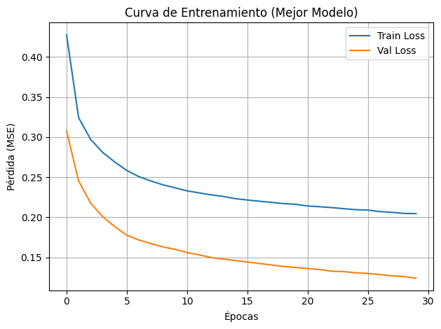
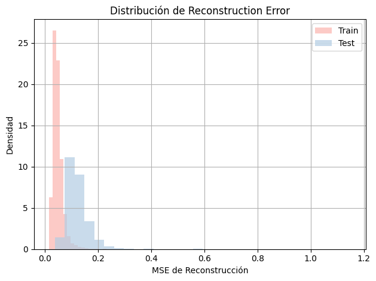
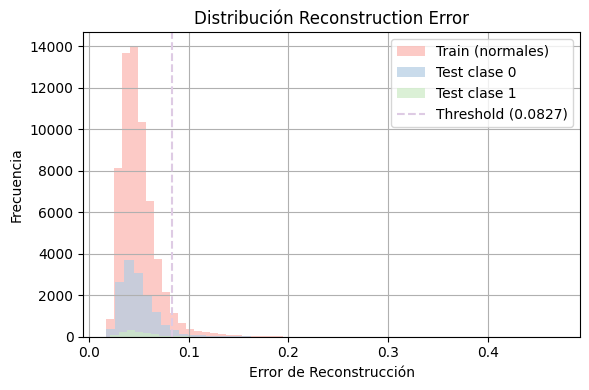
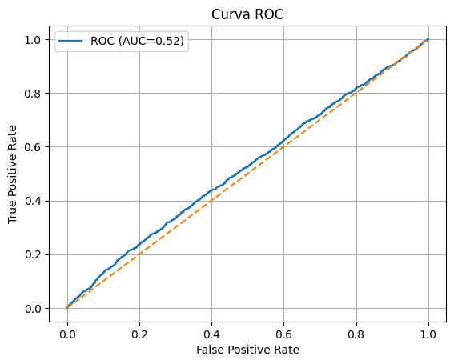
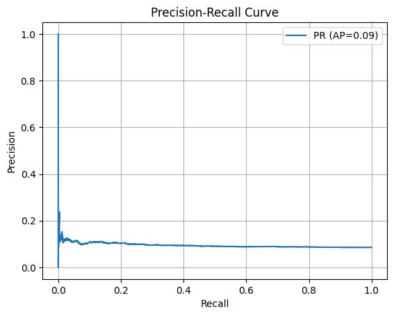
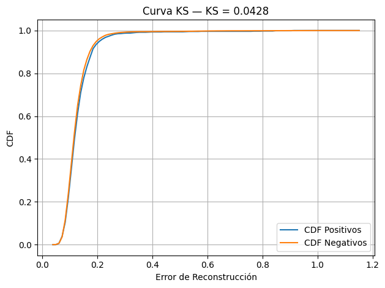
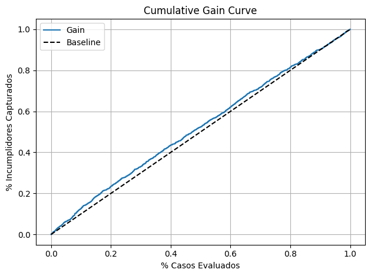
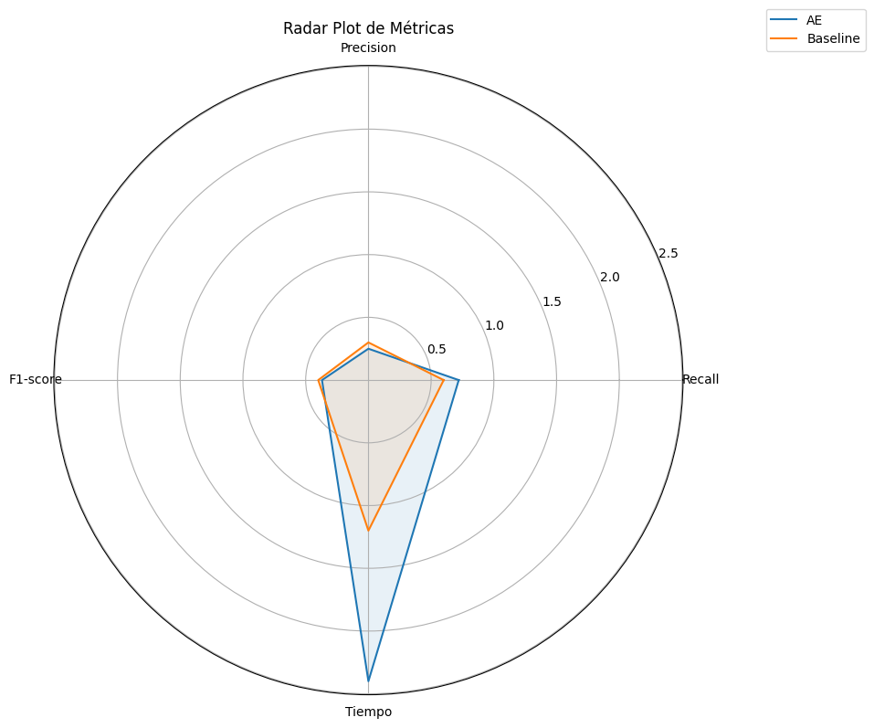
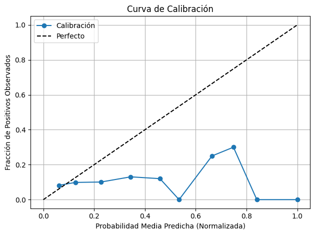
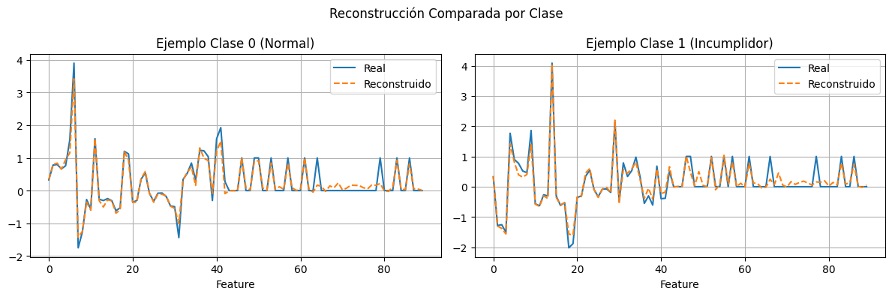

Red LSTM Autoencoder#
Sección 1: Configuración Inicial y Preparación de Datos#
1.Importación de Librerías#
# 1. IMPORTS
import numpy as np
import pandas as pd
import time
import os
import pickle
import matplotlib.pyplot as plt
import seaborn as sns
import matplotlib.pyplot as plt
from sklearn.model_selection import train_test_split
from sklearn.preprocessing import StandardScaler, OneHotEncoder
from sklearn.compose import ColumnTransformer
from sklearn.pipeline import Pipeline
from sklearn.impute import SimpleImputer
from sklearn.model_selection import ParameterGrid
import tensorflow as tf
from tensorflow.keras.callbacks import EarlyStopping
from tensorflow.keras.layers import Input, LSTM, RepeatVector, TimeDistributed, Dense, Dropout, BatchNormalization
from tensorflow.keras.models import Model
from sklearn.metrics import (
roc_auc_score, precision_score, recall_score, f1_score, confusion_matrix,roc_curve,
confusion_matrix, ConfusionMatrixDisplay
)
2.Carga y División de Datos#
# 2. CARGA DE DATOS
df = pd.read_csv(r"C:\Users\DELL\Desktop\Aprendizaje_de_Maquina\credit_risk_the_end.csv")
y = df["incumplimiento_credito"]
X = df.drop(columns=["incumplimiento_credito"])
# 3. SPLIT antes de preprocesar para mantener longitudes consistentes
from sklearn.model_selection import train_test_split
X_train_raw, X_test_raw, y_train, y_test = train_test_split(
X, y, test_size=0.2, stratify=y, random_state=42
)
3.Preprocesamiento de Datos#
# 4. PREPROCESAMIENTO
num_cols = X.select_dtypes(include=["int64","float64"]).columns
cat_cols = X.select_dtypes(include=["object"]).columns
num_tf = Pipeline([
("imp", SimpleImputer(strategy="mean")),
("sc", StandardScaler())
])
cat_tf = Pipeline([
("imp", SimpleImputer(strategy="most_frequent")),
("oh", OneHotEncoder(handle_unknown="ignore"))
])
preprocessor = ColumnTransformer([
("num", num_tf, num_cols),
("cat", cat_tf, cat_cols),
])
# Preprocesamiento final antes del modelo
X_train_scaled = preprocessor.fit_transform(X_train_raw)
X_test_scaled = preprocessor.transform(X_test_raw)
# Convertir a secuencia 3D para LSTM
X_train_seq = X_train_scaled.reshape((-1, 1, X_train_scaled.shape[1]))
X_test_seq = X_test_scaled.reshape((-1, 1, X_test_scaled.shape[1]))
Sección 2: Fase de Modelado#
1.Definición de la Arquitectura LSTM Autoencoder#
# Función `create_lstm_model` que define la arquitectura encoder-decoder.
def create_ae_model(units=64, dropout_rate=0.2):
timesteps, n_features = X_train_0.shape[1], X_train_0.shape[2]
inputs = Input(shape=(timesteps, n_features))
# Encoder
x = LSTM(units, return_sequences=False)(inputs)
x = BatchNormalization()(x)
x = Dropout(dropout_rate)(x)
# Bottleneck → reproducimos la secuencia
x = RepeatVector(timesteps)(x)
# Decoder
x = LSTM(units, return_sequences=True)(x)
outputs = TimeDistributed(Dense(n_features, activation='linear'))(x)
ae = Model(inputs, outputs, name="lstm_autoencoder")
ae.compile(optimizer="adam", loss="mse")
return ae
2.GridSearch de Hiperparámetros#
from sklearn.model_selection import ParameterGrid
from sklearn.metrics import recall_score
from tensorflow.keras.callbacks import EarlyStopping
import pandas as pd
import time
# Filtrar solo clase 0 para entrenar
X_train_0 = X_train_seq[y_train == 0]
# Grilla de hiperparámetros
param_grid = {
"units": [32, 64], # Capacidad de la capa LSTM
"dropout_rate": [0.2, 0.3, 0.4], # Regularización
"batch_size": [32, 64, 128], # Tamaño del batch
"epochs": [30, 50 , 70], # Número de épocas
"threshold_percentile": [90, 95, 98] # Umbral para clasificación
}
results = []
grid = list(ParameterGrid(param_grid))
resultados = []
for i, params in enumerate(grid):
print(f"🔍 Combinación {i+1}/{len(grid)}: {params}")
# Crear modelo
ae = create_ae_model(units=params["units"], dropout_rate=params["dropout_rate"])
es = EarlyStopping(monitor="val_loss", patience=3, restore_best_weights=True)
# Entrenamiento
t0 = time.time()
history = ae.fit(
X_train_0, X_train_0,
batch_size=params["batch_size"],
epochs=params["epochs"],
validation_split=0.2,
callbacks=[es],
verbose=0
)
fit_minutes = (time.time() - t0) / 60
# Reconstrucción y error
X_train_rec = ae.predict(X_train_0)
errors_train = np.mean((X_train_0 - X_train_rec) ** 2, axis=(1, 2))
X_test_rec = ae.predict(X_test_seq)
errors_test = np.mean((X_test_seq - X_test_rec) ** 2, axis=(1, 2))
threshold = np.percentile(errors_train, params["threshold_percentile"])
y_pred = (errors_test > threshold).astype(int)
recall = recall_score(y_test, y_pred, pos_label=1)
# Guardar resultados completos
resultados.append({
**params,
"recall_test_clase_1": recall,
"threshold": threshold,
"fit_minutes": round(fit_minutes, 2),
"history": history.history,
"errors_test": errors_test,
"y_pred": y_pred,
"model": ae
})
🔍 Combinación 1/162: {'batch_size': 32, 'dropout_rate': 0.2, 'epochs': 30, 'threshold_percentile': 90, 'units': 32}
1794/1794 [==============================] - 3s 1ms/step
491/491 [==============================] - 1s 2ms/step
🔍 Combinación 2/162: {'batch_size': 32, 'dropout_rate': 0.2, 'epochs': 30, 'threshold_percentile': 90, 'units': 64}
1794/1794 [==============================] - 3s 1ms/step
491/491 [==============================] - 1s 1ms/step
🔍 Combinación 3/162: {'batch_size': 32, 'dropout_rate': 0.2, 'epochs': 30, 'threshold_percentile': 95, 'units': 32}
1794/1794 [==============================] - 3s 1ms/step
491/491 [==============================] - 1s 2ms/step
🔍 Combinación 4/162: {'batch_size': 32, 'dropout_rate': 0.2, 'epochs': 30, 'threshold_percentile': 95, 'units': 64}
1794/1794 [==============================] - 3s 1ms/step
491/491 [==============================] - 1s 1ms/step
🔍 Combinación 5/162: {'batch_size': 32, 'dropout_rate': 0.2, 'epochs': 30, 'threshold_percentile': 98, 'units': 32}
1794/1794 [==============================] - 3s 1ms/step
491/491 [==============================] - 1s 1ms/step
🔍 Combinación 6/162: {'batch_size': 32, 'dropout_rate': 0.2, 'epochs': 30, 'threshold_percentile': 98, 'units': 64}
1794/1794 [==============================] - 3s 1ms/step
491/491 [==============================] - 1s 1ms/step
🔍 Combinación 7/162: {'batch_size': 32, 'dropout_rate': 0.2, 'epochs': 50, 'threshold_percentile': 90, 'units': 32}
1794/1794 [==============================] - 3s 1ms/step
491/491 [==============================] - 1s 1ms/step
🔍 Combinación 8/162: {'batch_size': 32, 'dropout_rate': 0.2, 'epochs': 50, 'threshold_percentile': 90, 'units': 64}
1794/1794 [==============================] - 3s 1ms/step
491/491 [==============================] - 1s 1ms/step
🔍 Combinación 9/162: {'batch_size': 32, 'dropout_rate': 0.2, 'epochs': 50, 'threshold_percentile': 95, 'units': 32}
1794/1794 [==============================] - 3s 1ms/step
491/491 [==============================] - 1s 2ms/step
🔍 Combinación 10/162: {'batch_size': 32, 'dropout_rate': 0.2, 'epochs': 50, 'threshold_percentile': 95, 'units': 64}
1794/1794 [==============================] - 3s 1ms/step
491/491 [==============================] - 1s 1ms/step
🔍 Combinación 11/162: {'batch_size': 32, 'dropout_rate': 0.2, 'epochs': 50, 'threshold_percentile': 98, 'units': 32}
1794/1794 [==============================] - 3s 1ms/step
491/491 [==============================] - 1s 2ms/step
🔍 Combinación 12/162: {'batch_size': 32, 'dropout_rate': 0.2, 'epochs': 50, 'threshold_percentile': 98, 'units': 64}
1794/1794 [==============================] - 3s 1ms/step
491/491 [==============================] - 1s 2ms/step
🔍 Combinación 13/162: {'batch_size': 32, 'dropout_rate': 0.2, 'epochs': 70, 'threshold_percentile': 90, 'units': 32}
1794/1794 [==============================] - 3s 1ms/step
491/491 [==============================] - 1s 2ms/step
🔍 Combinación 14/162: {'batch_size': 32, 'dropout_rate': 0.2, 'epochs': 70, 'threshold_percentile': 90, 'units': 64}
1794/1794 [==============================] - 3s 1ms/step
491/491 [==============================] - 1s 2ms/step
🔍 Combinación 15/162: {'batch_size': 32, 'dropout_rate': 0.2, 'epochs': 70, 'threshold_percentile': 95, 'units': 32}
1794/1794 [==============================] - 3s 1ms/step
491/491 [==============================] - 1s 1ms/step
🔍 Combinación 16/162: {'batch_size': 32, 'dropout_rate': 0.2, 'epochs': 70, 'threshold_percentile': 95, 'units': 64}
1794/1794 [==============================] - 3s 2ms/step
491/491 [==============================] - 1s 1ms/step
🔍 Combinación 17/162: {'batch_size': 32, 'dropout_rate': 0.2, 'epochs': 70, 'threshold_percentile': 98, 'units': 32}
1794/1794 [==============================] - 3s 1ms/step
491/491 [==============================] - 1s 2ms/step
🔍 Combinación 18/162: {'batch_size': 32, 'dropout_rate': 0.2, 'epochs': 70, 'threshold_percentile': 98, 'units': 64}
1794/1794 [==============================] - 6s 3ms/step
491/491 [==============================] - 1s 3ms/step
🔍 Combinación 19/162: {'batch_size': 32, 'dropout_rate': 0.3, 'epochs': 30, 'threshold_percentile': 90, 'units': 32}
1794/1794 [==============================] - 3s 1ms/step
491/491 [==============================] - 1s 1ms/step
🔍 Combinación 20/162: {'batch_size': 32, 'dropout_rate': 0.3, 'epochs': 30, 'threshold_percentile': 90, 'units': 64}
1794/1794 [==============================] - 3s 1ms/step
491/491 [==============================] - 1s 2ms/step
🔍 Combinación 21/162: {'batch_size': 32, 'dropout_rate': 0.3, 'epochs': 30, 'threshold_percentile': 95, 'units': 32}
1794/1794 [==============================] - 6s 3ms/step
491/491 [==============================] - 1s 3ms/step
🔍 Combinación 22/162: {'batch_size': 32, 'dropout_rate': 0.3, 'epochs': 30, 'threshold_percentile': 95, 'units': 64}
1794/1794 [==============================] - 6s 3ms/step
491/491 [==============================] - 2s 3ms/step
🔍 Combinación 23/162: {'batch_size': 32, 'dropout_rate': 0.3, 'epochs': 30, 'threshold_percentile': 98, 'units': 32}
1794/1794 [==============================] - 6s 3ms/step
491/491 [==============================] - 1s 3ms/step
🔍 Combinación 24/162: {'batch_size': 32, 'dropout_rate': 0.3, 'epochs': 30, 'threshold_percentile': 98, 'units': 64}
1794/1794 [==============================] - 5s 3ms/step
491/491 [==============================] - 1s 3ms/step
🔍 Combinación 25/162: {'batch_size': 32, 'dropout_rate': 0.3, 'epochs': 50, 'threshold_percentile': 90, 'units': 32}
1794/1794 [==============================] - 6s 3ms/step
491/491 [==============================] - 1s 3ms/step
🔍 Combinación 26/162: {'batch_size': 32, 'dropout_rate': 0.3, 'epochs': 50, 'threshold_percentile': 90, 'units': 64}
1794/1794 [==============================] - 6s 3ms/step
491/491 [==============================] - 1s 3ms/step
🔍 Combinación 27/162: {'batch_size': 32, 'dropout_rate': 0.3, 'epochs': 50, 'threshold_percentile': 95, 'units': 32}
1794/1794 [==============================] - 6s 3ms/step
491/491 [==============================] - 2s 3ms/step
🔍 Combinación 28/162: {'batch_size': 32, 'dropout_rate': 0.3, 'epochs': 50, 'threshold_percentile': 95, 'units': 64}
1794/1794 [==============================] - 6s 3ms/step
491/491 [==============================] - 2s 3ms/step
🔍 Combinación 29/162: {'batch_size': 32, 'dropout_rate': 0.3, 'epochs': 50, 'threshold_percentile': 98, 'units': 32}
1794/1794 [==============================] - 5s 3ms/step
491/491 [==============================] - 1s 3ms/step
🔍 Combinación 30/162: {'batch_size': 32, 'dropout_rate': 0.3, 'epochs': 50, 'threshold_percentile': 98, 'units': 64}
1794/1794 [==============================] - 5s 3ms/step
491/491 [==============================] - 1s 3ms/step
🔍 Combinación 31/162: {'batch_size': 32, 'dropout_rate': 0.3, 'epochs': 70, 'threshold_percentile': 90, 'units': 32}
1794/1794 [==============================] - 5s 3ms/step
491/491 [==============================] - 1s 3ms/step
🔍 Combinación 32/162: {'batch_size': 32, 'dropout_rate': 0.3, 'epochs': 70, 'threshold_percentile': 90, 'units': 64}
1794/1794 [==============================] - 6s 3ms/step
491/491 [==============================] - 1s 3ms/step
🔍 Combinación 33/162: {'batch_size': 32, 'dropout_rate': 0.3, 'epochs': 70, 'threshold_percentile': 95, 'units': 32}
1794/1794 [==============================] - 6s 3ms/step
491/491 [==============================] - 1s 3ms/step
🔍 Combinación 34/162: {'batch_size': 32, 'dropout_rate': 0.3, 'epochs': 70, 'threshold_percentile': 95, 'units': 64}
1794/1794 [==============================] - 6s 3ms/step
491/491 [==============================] - 1s 3ms/step
🔍 Combinación 35/162: {'batch_size': 32, 'dropout_rate': 0.3, 'epochs': 70, 'threshold_percentile': 98, 'units': 32}
1794/1794 [==============================] - 6s 3ms/step
491/491 [==============================] - 1s 3ms/step
🔍 Combinación 36/162: {'batch_size': 32, 'dropout_rate': 0.3, 'epochs': 70, 'threshold_percentile': 98, 'units': 64}
1794/1794 [==============================] - 3s 1ms/step
491/491 [==============================] - 1s 1ms/step
🔍 Combinación 37/162: {'batch_size': 32, 'dropout_rate': 0.4, 'epochs': 30, 'threshold_percentile': 90, 'units': 32}
1794/1794 [==============================] - 3s 2ms/step
491/491 [==============================] - 1s 2ms/step
🔍 Combinación 38/162: {'batch_size': 32, 'dropout_rate': 0.4, 'epochs': 30, 'threshold_percentile': 90, 'units': 64}
1794/1794 [==============================] - 3s 1ms/step
491/491 [==============================] - 1s 1ms/step
🔍 Combinación 39/162: {'batch_size': 32, 'dropout_rate': 0.4, 'epochs': 30, 'threshold_percentile': 95, 'units': 32}
1794/1794 [==============================] - 3s 1ms/step
491/491 [==============================] - 1s 1ms/step
🔍 Combinación 40/162: {'batch_size': 32, 'dropout_rate': 0.4, 'epochs': 30, 'threshold_percentile': 95, 'units': 64}
1794/1794 [==============================] - 5s 3ms/step
491/491 [==============================] - 1s 3ms/step
🔍 Combinación 41/162: {'batch_size': 32, 'dropout_rate': 0.4, 'epochs': 30, 'threshold_percentile': 98, 'units': 32}
1794/1794 [==============================] - 6s 3ms/step
491/491 [==============================] - 1s 3ms/step
🔍 Combinación 42/162: {'batch_size': 32, 'dropout_rate': 0.4, 'epochs': 30, 'threshold_percentile': 98, 'units': 64}
1794/1794 [==============================] - 3s 1ms/step
491/491 [==============================] - 1s 1ms/step
🔍 Combinación 43/162: {'batch_size': 32, 'dropout_rate': 0.4, 'epochs': 50, 'threshold_percentile': 90, 'units': 32}
1794/1794 [==============================] - 3s 1ms/step
491/491 [==============================] - 1s 1ms/step
🔍 Combinación 44/162: {'batch_size': 32, 'dropout_rate': 0.4, 'epochs': 50, 'threshold_percentile': 90, 'units': 64}
1794/1794 [==============================] - 3s 1ms/step
491/491 [==============================] - 1s 1ms/step
🔍 Combinación 45/162: {'batch_size': 32, 'dropout_rate': 0.4, 'epochs': 50, 'threshold_percentile': 95, 'units': 32}
1794/1794 [==============================] - 3s 2ms/step
491/491 [==============================] - 1s 1ms/step
🔍 Combinación 46/162: {'batch_size': 32, 'dropout_rate': 0.4, 'epochs': 50, 'threshold_percentile': 95, 'units': 64}
1794/1794 [==============================] - 3s 1ms/step
491/491 [==============================] - 1s 1ms/step
🔍 Combinación 47/162: {'batch_size': 32, 'dropout_rate': 0.4, 'epochs': 50, 'threshold_percentile': 98, 'units': 32}
1794/1794 [==============================] - 3s 1ms/step
491/491 [==============================] - 1s 1ms/step
🔍 Combinación 48/162: {'batch_size': 32, 'dropout_rate': 0.4, 'epochs': 50, 'threshold_percentile': 98, 'units': 64}
1794/1794 [==============================] - 3s 1ms/step
491/491 [==============================] - 1s 1ms/step
🔍 Combinación 49/162: {'batch_size': 32, 'dropout_rate': 0.4, 'epochs': 70, 'threshold_percentile': 90, 'units': 32}
1794/1794 [==============================] - 3s 1ms/step
491/491 [==============================] - 1s 2ms/step
🔍 Combinación 50/162: {'batch_size': 32, 'dropout_rate': 0.4, 'epochs': 70, 'threshold_percentile': 90, 'units': 64}
1794/1794 [==============================] - 3s 1ms/step
491/491 [==============================] - 1s 1ms/step
🔍 Combinación 51/162: {'batch_size': 32, 'dropout_rate': 0.4, 'epochs': 70, 'threshold_percentile': 95, 'units': 32}
1794/1794 [==============================] - 3s 1ms/step
491/491 [==============================] - 1s 1ms/step
🔍 Combinación 52/162: {'batch_size': 32, 'dropout_rate': 0.4, 'epochs': 70, 'threshold_percentile': 95, 'units': 64}
1794/1794 [==============================] - 3s 1ms/step
491/491 [==============================] - 1s 1ms/step
🔍 Combinación 53/162: {'batch_size': 32, 'dropout_rate': 0.4, 'epochs': 70, 'threshold_percentile': 98, 'units': 32}
1794/1794 [==============================] - 3s 1ms/step
491/491 [==============================] - 1s 1ms/step
🔍 Combinación 54/162: {'batch_size': 32, 'dropout_rate': 0.4, 'epochs': 70, 'threshold_percentile': 98, 'units': 64}
1794/1794 [==============================] - 3s 1ms/step
491/491 [==============================] - 1s 1ms/step
🔍 Combinación 55/162: {'batch_size': 64, 'dropout_rate': 0.2, 'epochs': 30, 'threshold_percentile': 90, 'units': 32}
1794/1794 [==============================] - 3s 1ms/step
491/491 [==============================] - 1s 1ms/step
🔍 Combinación 56/162: {'batch_size': 64, 'dropout_rate': 0.2, 'epochs': 30, 'threshold_percentile': 90, 'units': 64}
1794/1794 [==============================] - 3s 1ms/step
491/491 [==============================] - 1s 1ms/step
🔍 Combinación 57/162: {'batch_size': 64, 'dropout_rate': 0.2, 'epochs': 30, 'threshold_percentile': 95, 'units': 32}
1794/1794 [==============================] - 3s 1ms/step
491/491 [==============================] - 1s 2ms/step
🔍 Combinación 58/162: {'batch_size': 64, 'dropout_rate': 0.2, 'epochs': 30, 'threshold_percentile': 95, 'units': 64}
1794/1794 [==============================] - 3s 1ms/step
491/491 [==============================] - 1s 1ms/step
🔍 Combinación 59/162: {'batch_size': 64, 'dropout_rate': 0.2, 'epochs': 30, 'threshold_percentile': 98, 'units': 32}
1794/1794 [==============================] - 3s 1ms/step
491/491 [==============================] - 1s 2ms/step
🔍 Combinación 60/162: {'batch_size': 64, 'dropout_rate': 0.2, 'epochs': 30, 'threshold_percentile': 98, 'units': 64}
1794/1794 [==============================] - 3s 1ms/step
491/491 [==============================] - 1s 2ms/step
🔍 Combinación 61/162: {'batch_size': 64, 'dropout_rate': 0.2, 'epochs': 50, 'threshold_percentile': 90, 'units': 32}
1794/1794 [==============================] - 3s 1ms/step
491/491 [==============================] - 1s 1ms/step
🔍 Combinación 62/162: {'batch_size': 64, 'dropout_rate': 0.2, 'epochs': 50, 'threshold_percentile': 90, 'units': 64}
1794/1794 [==============================] - 3s 1ms/step
491/491 [==============================] - 1s 2ms/step
🔍 Combinación 63/162: {'batch_size': 64, 'dropout_rate': 0.2, 'epochs': 50, 'threshold_percentile': 95, 'units': 32}
1794/1794 [==============================] - 3s 1ms/step
491/491 [==============================] - 1s 1ms/step
🔍 Combinación 64/162: {'batch_size': 64, 'dropout_rate': 0.2, 'epochs': 50, 'threshold_percentile': 95, 'units': 64}
1794/1794 [==============================] - 3s 1ms/step
491/491 [==============================] - 1s 1ms/step
🔍 Combinación 65/162: {'batch_size': 64, 'dropout_rate': 0.2, 'epochs': 50, 'threshold_percentile': 98, 'units': 32}
1794/1794 [==============================] - 3s 1ms/step
491/491 [==============================] - 1s 2ms/step
🔍 Combinación 66/162: {'batch_size': 64, 'dropout_rate': 0.2, 'epochs': 50, 'threshold_percentile': 98, 'units': 64}
1794/1794 [==============================] - 3s 1ms/step
491/491 [==============================] - 1s 1ms/step
🔍 Combinación 67/162: {'batch_size': 64, 'dropout_rate': 0.2, 'epochs': 70, 'threshold_percentile': 90, 'units': 32}
1794/1794 [==============================] - 3s 1ms/step
491/491 [==============================] - 1s 2ms/step
🔍 Combinación 68/162: {'batch_size': 64, 'dropout_rate': 0.2, 'epochs': 70, 'threshold_percentile': 90, 'units': 64}
1794/1794 [==============================] - 3s 1ms/step
491/491 [==============================] - 1s 1ms/step
🔍 Combinación 69/162: {'batch_size': 64, 'dropout_rate': 0.2, 'epochs': 70, 'threshold_percentile': 95, 'units': 32}
1794/1794 [==============================] - 3s 1ms/step
491/491 [==============================] - 1s 1ms/step
🔍 Combinación 70/162: {'batch_size': 64, 'dropout_rate': 0.2, 'epochs': 70, 'threshold_percentile': 95, 'units': 64}
1794/1794 [==============================] - 3s 2ms/step
491/491 [==============================] - 1s 2ms/step
🔍 Combinación 71/162: {'batch_size': 64, 'dropout_rate': 0.2, 'epochs': 70, 'threshold_percentile': 98, 'units': 32}
1794/1794 [==============================] - 3s 1ms/step
491/491 [==============================] - 1s 2ms/step
🔍 Combinación 72/162: {'batch_size': 64, 'dropout_rate': 0.2, 'epochs': 70, 'threshold_percentile': 98, 'units': 64}
1794/1794 [==============================] - 3s 2ms/step
491/491 [==============================] - 1s 1ms/step
🔍 Combinación 73/162: {'batch_size': 64, 'dropout_rate': 0.3, 'epochs': 30, 'threshold_percentile': 90, 'units': 32}
1794/1794 [==============================] - 3s 1ms/step
491/491 [==============================] - 1s 1ms/step
🔍 Combinación 74/162: {'batch_size': 64, 'dropout_rate': 0.3, 'epochs': 30, 'threshold_percentile': 90, 'units': 64}
1794/1794 [==============================] - 3s 1ms/step
491/491 [==============================] - 1s 1ms/step
🔍 Combinación 75/162: {'batch_size': 64, 'dropout_rate': 0.3, 'epochs': 30, 'threshold_percentile': 95, 'units': 32}
1794/1794 [==============================] - 7s 3ms/step
491/491 [==============================] - 2s 4ms/step
🔍 Combinación 76/162: {'batch_size': 64, 'dropout_rate': 0.3, 'epochs': 30, 'threshold_percentile': 95, 'units': 64}
1794/1794 [==============================] - 7s 4ms/step
491/491 [==============================] - 2s 4ms/step
🔍 Combinación 77/162: {'batch_size': 64, 'dropout_rate': 0.3, 'epochs': 30, 'threshold_percentile': 98, 'units': 32}
1794/1794 [==============================] - 3s 2ms/step
491/491 [==============================] - 1s 2ms/step
🔍 Combinación 78/162: {'batch_size': 64, 'dropout_rate': 0.3, 'epochs': 30, 'threshold_percentile': 98, 'units': 64}
1794/1794 [==============================] - 3s 1ms/step
491/491 [==============================] - 1s 2ms/step
🔍 Combinación 79/162: {'batch_size': 64, 'dropout_rate': 0.3, 'epochs': 50, 'threshold_percentile': 90, 'units': 32}
1794/1794 [==============================] - 3s 1ms/step
491/491 [==============================] - 2s 4ms/step
🔍 Combinación 80/162: {'batch_size': 64, 'dropout_rate': 0.3, 'epochs': 50, 'threshold_percentile': 90, 'units': 64}
1794/1794 [==============================] - 3s 1ms/step
491/491 [==============================] - 1s 2ms/step
🔍 Combinación 81/162: {'batch_size': 64, 'dropout_rate': 0.3, 'epochs': 50, 'threshold_percentile': 95, 'units': 32}
1794/1794 [==============================] - 3s 2ms/step
491/491 [==============================] - 1s 2ms/step
🔍 Combinación 82/162: {'batch_size': 64, 'dropout_rate': 0.3, 'epochs': 50, 'threshold_percentile': 95, 'units': 64}
1794/1794 [==============================] - 3s 2ms/step
491/491 [==============================] - 1s 1ms/step
🔍 Combinación 83/162: {'batch_size': 64, 'dropout_rate': 0.3, 'epochs': 50, 'threshold_percentile': 98, 'units': 32}
1794/1794 [==============================] - 3s 2ms/step
491/491 [==============================] - 1s 1ms/step
🔍 Combinación 84/162: {'batch_size': 64, 'dropout_rate': 0.3, 'epochs': 50, 'threshold_percentile': 98, 'units': 64}
1794/1794 [==============================] - 3s 2ms/step
491/491 [==============================] - 1s 2ms/step
🔍 Combinación 85/162: {'batch_size': 64, 'dropout_rate': 0.3, 'epochs': 70, 'threshold_percentile': 90, 'units': 32}
1794/1794 [==============================] - 3s 1ms/step
491/491 [==============================] - 1s 2ms/step
🔍 Combinación 86/162: {'batch_size': 64, 'dropout_rate': 0.3, 'epochs': 70, 'threshold_percentile': 90, 'units': 64}
1794/1794 [==============================] - 8s 4ms/step
491/491 [==============================] - 2s 5ms/step
🔍 Combinación 87/162: {'batch_size': 64, 'dropout_rate': 0.3, 'epochs': 70, 'threshold_percentile': 95, 'units': 32}
1794/1794 [==============================] - 3s 2ms/step
491/491 [==============================] - 1s 2ms/step
🔍 Combinación 88/162: {'batch_size': 64, 'dropout_rate': 0.3, 'epochs': 70, 'threshold_percentile': 95, 'units': 64}
1794/1794 [==============================] - 3s 2ms/step
491/491 [==============================] - 1s 2ms/step
🔍 Combinación 89/162: {'batch_size': 64, 'dropout_rate': 0.3, 'epochs': 70, 'threshold_percentile': 98, 'units': 32}
1794/1794 [==============================] - 3s 2ms/step
491/491 [==============================] - 1s 1ms/step
🔍 Combinación 90/162: {'batch_size': 64, 'dropout_rate': 0.3, 'epochs': 70, 'threshold_percentile': 98, 'units': 64}
1794/1794 [==============================] - 3s 2ms/step
491/491 [==============================] - 1s 2ms/step
🔍 Combinación 91/162: {'batch_size': 64, 'dropout_rate': 0.4, 'epochs': 30, 'threshold_percentile': 90, 'units': 32}
1794/1794 [==============================] - 3s 1ms/step
491/491 [==============================] - 1s 2ms/step
🔍 Combinación 92/162: {'batch_size': 64, 'dropout_rate': 0.4, 'epochs': 30, 'threshold_percentile': 90, 'units': 64}
1794/1794 [==============================] - 3s 2ms/step
491/491 [==============================] - 1s 2ms/step
🔍 Combinación 93/162: {'batch_size': 64, 'dropout_rate': 0.4, 'epochs': 30, 'threshold_percentile': 95, 'units': 32}
1794/1794 [==============================] - 3s 2ms/step
491/491 [==============================] - 1s 2ms/step
🔍 Combinación 94/162: {'batch_size': 64, 'dropout_rate': 0.4, 'epochs': 30, 'threshold_percentile': 95, 'units': 64}
1794/1794 [==============================] - 3s 2ms/step
491/491 [==============================] - 1s 2ms/step
🔍 Combinación 95/162: {'batch_size': 64, 'dropout_rate': 0.4, 'epochs': 30, 'threshold_percentile': 98, 'units': 32}
1794/1794 [==============================] - 3s 1ms/step
491/491 [==============================] - 1s 2ms/step
🔍 Combinación 96/162: {'batch_size': 64, 'dropout_rate': 0.4, 'epochs': 30, 'threshold_percentile': 98, 'units': 64}
1794/1794 [==============================] - 3s 1ms/step
491/491 [==============================] - 1s 2ms/step
🔍 Combinación 97/162: {'batch_size': 64, 'dropout_rate': 0.4, 'epochs': 50, 'threshold_percentile': 90, 'units': 32}
1794/1794 [==============================] - 3s 2ms/step
491/491 [==============================] - 1s 2ms/step
🔍 Combinación 98/162: {'batch_size': 64, 'dropout_rate': 0.4, 'epochs': 50, 'threshold_percentile': 90, 'units': 64}
1794/1794 [==============================] - 3s 1ms/step
491/491 [==============================] - 1s 2ms/step
🔍 Combinación 99/162: {'batch_size': 64, 'dropout_rate': 0.4, 'epochs': 50, 'threshold_percentile': 95, 'units': 32}
1794/1794 [==============================] - 3s 2ms/step
491/491 [==============================] - 1s 2ms/step
🔍 Combinación 100/162: {'batch_size': 64, 'dropout_rate': 0.4, 'epochs': 50, 'threshold_percentile': 95, 'units': 64}
1794/1794 [==============================] - 3s 2ms/step
491/491 [==============================] - 1s 2ms/step
🔍 Combinación 101/162: {'batch_size': 64, 'dropout_rate': 0.4, 'epochs': 50, 'threshold_percentile': 98, 'units': 32}
1794/1794 [==============================] - 3s 2ms/step
491/491 [==============================] - 1s 1ms/step
🔍 Combinación 102/162: {'batch_size': 64, 'dropout_rate': 0.4, 'epochs': 50, 'threshold_percentile': 98, 'units': 64}
1794/1794 [==============================] - 3s 2ms/step
491/491 [==============================] - 1s 2ms/step
🔍 Combinación 103/162: {'batch_size': 64, 'dropout_rate': 0.4, 'epochs': 70, 'threshold_percentile': 90, 'units': 32}
1794/1794 [==============================] - 3s 2ms/step
491/491 [==============================] - 1s 2ms/step
🔍 Combinación 104/162: {'batch_size': 64, 'dropout_rate': 0.4, 'epochs': 70, 'threshold_percentile': 90, 'units': 64}
1794/1794 [==============================] - 3s 2ms/step
491/491 [==============================] - 1s 2ms/step
🔍 Combinación 105/162: {'batch_size': 64, 'dropout_rate': 0.4, 'epochs': 70, 'threshold_percentile': 95, 'units': 32}
1794/1794 [==============================] - 3s 2ms/step
491/491 [==============================] - 1s 1ms/step
🔍 Combinación 106/162: {'batch_size': 64, 'dropout_rate': 0.4, 'epochs': 70, 'threshold_percentile': 95, 'units': 64}
1794/1794 [==============================] - 3s 2ms/step
491/491 [==============================] - 1s 2ms/step
🔍 Combinación 107/162: {'batch_size': 64, 'dropout_rate': 0.4, 'epochs': 70, 'threshold_percentile': 98, 'units': 32}
1794/1794 [==============================] - 3s 1ms/step
491/491 [==============================] - 1s 2ms/step
🔍 Combinación 108/162: {'batch_size': 64, 'dropout_rate': 0.4, 'epochs': 70, 'threshold_percentile': 98, 'units': 64}
1794/1794 [==============================] - 3s 1ms/step
491/491 [==============================] - 1s 2ms/step
🔍 Combinación 109/162: {'batch_size': 128, 'dropout_rate': 0.2, 'epochs': 30, 'threshold_percentile': 90, 'units': 32}
1794/1794 [==============================] - 3s 1ms/step
491/491 [==============================] - 1s 1ms/step
🔍 Combinación 110/162: {'batch_size': 128, 'dropout_rate': 0.2, 'epochs': 30, 'threshold_percentile': 90, 'units': 64}
1794/1794 [==============================] - 3s 1ms/step
491/491 [==============================] - 1s 2ms/step
🔍 Combinación 111/162: {'batch_size': 128, 'dropout_rate': 0.2, 'epochs': 30, 'threshold_percentile': 95, 'units': 32}
1794/1794 [==============================] - 3s 1ms/step
491/491 [==============================] - 1s 2ms/step
🔍 Combinación 112/162: {'batch_size': 128, 'dropout_rate': 0.2, 'epochs': 30, 'threshold_percentile': 95, 'units': 64}
1794/1794 [==============================] - 3s 2ms/step
491/491 [==============================] - 1s 1ms/step
🔍 Combinación 113/162: {'batch_size': 128, 'dropout_rate': 0.2, 'epochs': 30, 'threshold_percentile': 98, 'units': 32}
1794/1794 [==============================] - 3s 1ms/step
491/491 [==============================] - 1s 1ms/step
🔍 Combinación 114/162: {'batch_size': 128, 'dropout_rate': 0.2, 'epochs': 30, 'threshold_percentile': 98, 'units': 64}
1794/1794 [==============================] - 3s 1ms/step
491/491 [==============================] - 1s 2ms/step
🔍 Combinación 115/162: {'batch_size': 128, 'dropout_rate': 0.2, 'epochs': 50, 'threshold_percentile': 90, 'units': 32}
1794/1794 [==============================] - 3s 1ms/step
491/491 [==============================] - 1s 2ms/step
🔍 Combinación 116/162: {'batch_size': 128, 'dropout_rate': 0.2, 'epochs': 50, 'threshold_percentile': 90, 'units': 64}
1794/1794 [==============================] - 3s 2ms/step
491/491 [==============================] - 1s 1ms/step
🔍 Combinación 117/162: {'batch_size': 128, 'dropout_rate': 0.2, 'epochs': 50, 'threshold_percentile': 95, 'units': 32}
1794/1794 [==============================] - 3s 1ms/step
491/491 [==============================] - 1s 2ms/step
🔍 Combinación 118/162: {'batch_size': 128, 'dropout_rate': 0.2, 'epochs': 50, 'threshold_percentile': 95, 'units': 64}
1794/1794 [==============================] - 3s 1ms/step
491/491 [==============================] - 1s 2ms/step
🔍 Combinación 119/162: {'batch_size': 128, 'dropout_rate': 0.2, 'epochs': 50, 'threshold_percentile': 98, 'units': 32}
1794/1794 [==============================] - 3s 2ms/step
491/491 [==============================] - 1s 2ms/step
🔍 Combinación 120/162: {'batch_size': 128, 'dropout_rate': 0.2, 'epochs': 50, 'threshold_percentile': 98, 'units': 64}
1794/1794 [==============================] - 3s 2ms/step
491/491 [==============================] - 1s 2ms/step
🔍 Combinación 121/162: {'batch_size': 128, 'dropout_rate': 0.2, 'epochs': 70, 'threshold_percentile': 90, 'units': 32}
1794/1794 [==============================] - 3s 2ms/step
491/491 [==============================] - 1s 2ms/step
🔍 Combinación 122/162: {'batch_size': 128, 'dropout_rate': 0.2, 'epochs': 70, 'threshold_percentile': 90, 'units': 64}
1794/1794 [==============================] - 3s 2ms/step
491/491 [==============================] - 1s 2ms/step
🔍 Combinación 123/162: {'batch_size': 128, 'dropout_rate': 0.2, 'epochs': 70, 'threshold_percentile': 95, 'units': 32}
1794/1794 [==============================] - 3s 2ms/step
491/491 [==============================] - 1s 2ms/step
🔍 Combinación 124/162: {'batch_size': 128, 'dropout_rate': 0.2, 'epochs': 70, 'threshold_percentile': 95, 'units': 64}
1794/1794 [==============================] - 3s 1ms/step
491/491 [==============================] - 1s 2ms/step
🔍 Combinación 125/162: {'batch_size': 128, 'dropout_rate': 0.2, 'epochs': 70, 'threshold_percentile': 98, 'units': 32}
1794/1794 [==============================] - 3s 2ms/step
491/491 [==============================] - 1s 2ms/step
🔍 Combinación 126/162: {'batch_size': 128, 'dropout_rate': 0.2, 'epochs': 70, 'threshold_percentile': 98, 'units': 64}
1794/1794 [==============================] - 3s 2ms/step
491/491 [==============================] - 1s 1ms/step
🔍 Combinación 127/162: {'batch_size': 128, 'dropout_rate': 0.3, 'epochs': 30, 'threshold_percentile': 90, 'units': 32}
1794/1794 [==============================] - 3s 2ms/step
491/491 [==============================] - 1s 2ms/step
🔍 Combinación 128/162: {'batch_size': 128, 'dropout_rate': 0.3, 'epochs': 30, 'threshold_percentile': 90, 'units': 64}
1794/1794 [==============================] - 3s 2ms/step
491/491 [==============================] - 1s 2ms/step
🔍 Combinación 129/162: {'batch_size': 128, 'dropout_rate': 0.3, 'epochs': 30, 'threshold_percentile': 95, 'units': 32}
1794/1794 [==============================] - 3s 2ms/step
491/491 [==============================] - 1s 2ms/step
🔍 Combinación 130/162: {'batch_size': 128, 'dropout_rate': 0.3, 'epochs': 30, 'threshold_percentile': 95, 'units': 64}
1794/1794 [==============================] - 3s 1ms/step
491/491 [==============================] - 1s 1ms/step
🔍 Combinación 131/162: {'batch_size': 128, 'dropout_rate': 0.3, 'epochs': 30, 'threshold_percentile': 98, 'units': 32}
1794/1794 [==============================] - 3s 1ms/step
491/491 [==============================] - 1s 1ms/step
🔍 Combinación 132/162: {'batch_size': 128, 'dropout_rate': 0.3, 'epochs': 30, 'threshold_percentile': 98, 'units': 64}
1794/1794 [==============================] - 3s 1ms/step
491/491 [==============================] - 1s 1ms/step
🔍 Combinación 133/162: {'batch_size': 128, 'dropout_rate': 0.3, 'epochs': 50, 'threshold_percentile': 90, 'units': 32}
1794/1794 [==============================] - 3s 1ms/step
491/491 [==============================] - 1s 1ms/step
🔍 Combinación 134/162: {'batch_size': 128, 'dropout_rate': 0.3, 'epochs': 50, 'threshold_percentile': 90, 'units': 64}
1794/1794 [==============================] - 3s 1ms/step
491/491 [==============================] - 1s 2ms/step
🔍 Combinación 135/162: {'batch_size': 128, 'dropout_rate': 0.3, 'epochs': 50, 'threshold_percentile': 95, 'units': 32}
1794/1794 [==============================] - 3s 1ms/step
491/491 [==============================] - 1s 2ms/step
🔍 Combinación 136/162: {'batch_size': 128, 'dropout_rate': 0.3, 'epochs': 50, 'threshold_percentile': 95, 'units': 64}
1794/1794 [==============================] - 3s 1ms/step
491/491 [==============================] - 1s 1ms/step
🔍 Combinación 137/162: {'batch_size': 128, 'dropout_rate': 0.3, 'epochs': 50, 'threshold_percentile': 98, 'units': 32}
1794/1794 [==============================] - 3s 1ms/step
491/491 [==============================] - 1s 2ms/step
🔍 Combinación 138/162: {'batch_size': 128, 'dropout_rate': 0.3, 'epochs': 50, 'threshold_percentile': 98, 'units': 64}
1794/1794 [==============================] - 3s 1ms/step
491/491 [==============================] - 1s 2ms/step
🔍 Combinación 139/162: {'batch_size': 128, 'dropout_rate': 0.3, 'epochs': 70, 'threshold_percentile': 90, 'units': 32}
1794/1794 [==============================] - 3s 1ms/step
491/491 [==============================] - 1s 2ms/step
🔍 Combinación 140/162: {'batch_size': 128, 'dropout_rate': 0.3, 'epochs': 70, 'threshold_percentile': 90, 'units': 64}
1794/1794 [==============================] - 3s 1ms/step
491/491 [==============================] - 1s 1ms/step
🔍 Combinación 141/162: {'batch_size': 128, 'dropout_rate': 0.3, 'epochs': 70, 'threshold_percentile': 95, 'units': 32}
1794/1794 [==============================] - 3s 1ms/step
491/491 [==============================] - 1s 1ms/step
🔍 Combinación 142/162: {'batch_size': 128, 'dropout_rate': 0.3, 'epochs': 70, 'threshold_percentile': 95, 'units': 64}
1794/1794 [==============================] - 3s 1ms/step
491/491 [==============================] - 1s 2ms/step
🔍 Combinación 143/162: {'batch_size': 128, 'dropout_rate': 0.3, 'epochs': 70, 'threshold_percentile': 98, 'units': 32}
1794/1794 [==============================] - 3s 2ms/step
491/491 [==============================] - 1s 2ms/step
🔍 Combinación 144/162: {'batch_size': 128, 'dropout_rate': 0.3, 'epochs': 70, 'threshold_percentile': 98, 'units': 64}
1794/1794 [==============================] - 3s 2ms/step
491/491 [==============================] - 1s 2ms/step
🔍 Combinación 145/162: {'batch_size': 128, 'dropout_rate': 0.4, 'epochs': 30, 'threshold_percentile': 90, 'units': 32}
1794/1794 [==============================] - 3s 2ms/step
491/491 [==============================] - 1s 2ms/step
🔍 Combinación 146/162: {'batch_size': 128, 'dropout_rate': 0.4, 'epochs': 30, 'threshold_percentile': 90, 'units': 64}
1794/1794 [==============================] - 3s 1ms/step
491/491 [==============================] - 1s 2ms/step
🔍 Combinación 147/162: {'batch_size': 128, 'dropout_rate': 0.4, 'epochs': 30, 'threshold_percentile': 95, 'units': 32}
1794/1794 [==============================] - 3s 2ms/step
491/491 [==============================] - 1s 2ms/step
🔍 Combinación 148/162: {'batch_size': 128, 'dropout_rate': 0.4, 'epochs': 30, 'threshold_percentile': 95, 'units': 64}
1794/1794 [==============================] - 7s 3ms/step
491/491 [==============================] - 2s 4ms/step
🔍 Combinación 149/162: {'batch_size': 128, 'dropout_rate': 0.4, 'epochs': 30, 'threshold_percentile': 98, 'units': 32}
1794/1794 [==============================] - 7s 4ms/step
491/491 [==============================] - 1s 2ms/step
🔍 Combinación 150/162: {'batch_size': 128, 'dropout_rate': 0.4, 'epochs': 30, 'threshold_percentile': 98, 'units': 64}
1794/1794 [==============================] - 3s 2ms/step
491/491 [==============================] - 1s 2ms/step
🔍 Combinación 151/162: {'batch_size': 128, 'dropout_rate': 0.4, 'epochs': 50, 'threshold_percentile': 90, 'units': 32}
1794/1794 [==============================] - 3s 2ms/step
491/491 [==============================] - 1s 2ms/step
🔍 Combinación 152/162: {'batch_size': 128, 'dropout_rate': 0.4, 'epochs': 50, 'threshold_percentile': 90, 'units': 64}
1794/1794 [==============================] - 3s 2ms/step
491/491 [==============================] - 1s 2ms/step
🔍 Combinación 153/162: {'batch_size': 128, 'dropout_rate': 0.4, 'epochs': 50, 'threshold_percentile': 95, 'units': 32}
1794/1794 [==============================] - 3s 2ms/step
491/491 [==============================] - 1s 2ms/step
🔍 Combinación 154/162: {'batch_size': 128, 'dropout_rate': 0.4, 'epochs': 50, 'threshold_percentile': 95, 'units': 64}
1794/1794 [==============================] - 3s 2ms/step
491/491 [==============================] - 1s 2ms/step
🔍 Combinación 155/162: {'batch_size': 128, 'dropout_rate': 0.4, 'epochs': 50, 'threshold_percentile': 98, 'units': 32}
1794/1794 [==============================] - 3s 2ms/step
491/491 [==============================] - 1s 2ms/step
🔍 Combinación 156/162: {'batch_size': 128, 'dropout_rate': 0.4, 'epochs': 50, 'threshold_percentile': 98, 'units': 64}
1794/1794 [==============================] - 3s 2ms/step
491/491 [==============================] - 1s 2ms/step
🔍 Combinación 157/162: {'batch_size': 128, 'dropout_rate': 0.4, 'epochs': 70, 'threshold_percentile': 90, 'units': 32}
1794/1794 [==============================] - 3s 2ms/step
491/491 [==============================] - 1s 2ms/step
🔍 Combinación 158/162: {'batch_size': 128, 'dropout_rate': 0.4, 'epochs': 70, 'threshold_percentile': 90, 'units': 64}
1794/1794 [==============================] - 3s 2ms/step
491/491 [==============================] - 1s 2ms/step
🔍 Combinación 159/162: {'batch_size': 128, 'dropout_rate': 0.4, 'epochs': 70, 'threshold_percentile': 95, 'units': 32}
1794/1794 [==============================] - 3s 2ms/step
491/491 [==============================] - 1s 1ms/step
🔍 Combinación 160/162: {'batch_size': 128, 'dropout_rate': 0.4, 'epochs': 70, 'threshold_percentile': 95, 'units': 64}
1794/1794 [==============================] - 3s 2ms/step
491/491 [==============================] - 1s 2ms/step
🔍 Combinación 161/162: {'batch_size': 128, 'dropout_rate': 0.4, 'epochs': 70, 'threshold_percentile': 98, 'units': 32}
1794/1794 [==============================] - 3s 2ms/step
491/491 [==============================] - 1s 2ms/step
🔍 Combinación 162/162: {'batch_size': 128, 'dropout_rate': 0.4, 'epochs': 70, 'threshold_percentile': 98, 'units': 64}
1794/1794 [==============================] - 3s 2ms/step
491/491 [==============================] - 1s 2ms/step
# Crear DataFrame de resultados tras GridSearch
df_resultados = pd.DataFrame(resultados)
df_resultados = df_resultados.sort_values(by="recall_test_clase_1", ascending=False)
# (Opcional) Verificar que exista
display(df_resultados.head())
| batch_size | dropout_rate | epochs | threshold_percentile | units | recall_test_clase_1 | threshold | fit_minutes | history | errors_test | y_pred | model | |
|---|---|---|---|---|---|---|---|---|---|---|---|---|
| 144 | 128 | 0.4 | 30 | 90 | 32 | 0.133482 | 0.171258 | 0.84 | {'loss': [0.4275132119655609, 0.32413089275360... | [0.11649450843996419, 0.09714585859800652, 0.1... | [0, 0, 0, 0, 0, 0, 0, 0, 0, 0, 0, 0, 0, 1, 0, ... | <keras.engine.functional.Functional object at ... |
| 96 | 64 | 0.4 | 50 | 90 | 32 | 0.129008 | 0.157563 | 2.01 | {'loss': [0.3919726610183716, 0.30531451106071... | [0.10591847968429705, 0.0858470444948951, 0.11... | [0, 0, 0, 0, 1, 0, 0, 0, 0, 0, 0, 0, 0, 1, 0, ... | <keras.engine.functional.Functional object at ... |
| 156 | 128 | 0.4 | 70 | 90 | 32 | 0.126771 | 0.159713 | 1.70 | {'loss': [0.42821475863456726, 0.3261776864528... | [0.08801985238176659, 0.09351066296901561, 0.1... | [0, 0, 0, 0, 1, 0, 0, 0, 0, 0, 0, 0, 0, 1, 0, ... | <keras.engine.functional.Functional object at ... |
| 150 | 128 | 0.4 | 50 | 90 | 32 | 0.126771 | 0.163271 | 1.34 | {'loss': [0.43108367919921875, 0.3233897387981... | [0.11426903662068487, 0.08771341134176194, 0.0... | [0, 0, 0, 0, 1, 0, 0, 0, 0, 0, 0, 0, 0, 0, 0, ... | <keras.engine.functional.Functional object at ... |
| 126 | 128 | 0.3 | 30 | 90 | 32 | 0.125280 | 0.142468 | 0.79 | {'loss': [0.4122496247291565, 0.29299908876419... | [0.08745080349667426, 0.07494107982361933, 0.0... | [0, 0, 0, 0, 1, 0, 0, 0, 0, 0, 0, 0, 0, 0, 0, ... | <keras.engine.functional.Functional object at ... |
# Recuperar predicción del mejor modelo
mejor_resultado = df_resultados.iloc[0]
y_pred_ae = mejor_resultado["y_pred"]
errors_test = mejor_resultado["errors_test"]
threshold = mejor_resultado["threshold"]
Sección 3: Evaluación Básica del Modelo#
1.Curva de Entrenamiento#
history = mejor_resultado["history"]
plt.plot(history["loss"], label="Train Loss")
plt.plot(history["val_loss"], label="Val Loss")
plt.title("Curva de Entrenamiento (Mejor Modelo)")
plt.xlabel("Épocas")
plt.ylabel("Pérdida (MSE)")
plt.grid(True)
plt.legend()
plt.tight_layout()
plt.show()

2.Tabla de Hiperparámetros Óptimos#
# 1. Renombrar columnas para visualización
df_viz = df_resultados.copy()
df_viz = df_viz.rename(columns={
"units": "Unidades (LSTM)",
"dropout_rate": "Dropout rate",
"batch_size": "Batch size",
"epochs": "Épocas",
"threshold_percentile": "Percentil Umbral",
"recall_test_clase_1": "Recall Clase 1",
"fit_minutes": "Tiempo (min)"
})
# 2. Redondear valores numéricos
df_viz = df_viz[[
"Unidades (LSTM)", "Dropout rate", "Batch size", "Épocas",
"Percentil Umbral", "Recall Clase 1", "Tiempo (min)"
]].round({
"Dropout rate": 2,
"Recall Clase 1": 4,
"Tiempo (min)": 2
})
# 3. Estilo: resaltar el máximo de Recall con color más fuerte
display(
df_viz.style
.format({
"Dropout rate": "{:.2f}",
"Recall Clase 1": "{:.4f}",
"Tiempo (min)": "{:.2f}"
})
.set_caption("Combinaciones probadas en el GridSearch — AE One-Class")
.background_gradient(subset=["Recall Clase 1"], cmap="YlGn", axis=0) # verde = mejor recall
.highlight_max(subset=["Recall Clase 1"], color="salmon", axis=0) # mejor resaltado
)
| Unidades (LSTM) | Dropout rate | Batch size | Épocas | Percentil Umbral | Recall Clase 1 | Tiempo (min) | |
|---|---|---|---|---|---|---|---|
| 144 | 32 | 0.40 | 128 | 30 | 90 | 0.1335 | 0.84 |
| 96 | 32 | 0.40 | 64 | 50 | 90 | 0.1290 | 2.01 |
| 156 | 32 | 0.40 | 128 | 70 | 90 | 0.1268 | 1.70 |
| 150 | 32 | 0.40 | 128 | 50 | 90 | 0.1268 | 1.34 |
| 126 | 32 | 0.30 | 128 | 30 | 90 | 0.1253 | 0.79 |
| 90 | 32 | 0.40 | 64 | 30 | 90 | 0.1223 | 1.56 |
| 30 | 32 | 0.30 | 32 | 70 | 90 | 0.1223 | 4.82 |
| 102 | 32 | 0.40 | 64 | 70 | 90 | 0.1223 | 4.29 |
| 48 | 32 | 0.40 | 32 | 70 | 90 | 0.1216 | 3.44 |
| 138 | 32 | 0.30 | 128 | 70 | 90 | 0.1201 | 1.45 |
| 37 | 64 | 0.40 | 32 | 30 | 90 | 0.1201 | 2.83 |
| 6 | 32 | 0.20 | 32 | 50 | 90 | 0.1193 | 4.55 |
| 12 | 32 | 0.20 | 32 | 70 | 90 | 0.1193 | 3.25 |
| 108 | 32 | 0.20 | 128 | 30 | 90 | 0.1186 | 0.77 |
| 84 | 32 | 0.30 | 64 | 70 | 90 | 0.1186 | 2.04 |
| 78 | 32 | 0.30 | 64 | 50 | 90 | 0.1186 | 1.43 |
| 18 | 32 | 0.30 | 32 | 30 | 90 | 0.1186 | 5.54 |
| 49 | 64 | 0.40 | 32 | 70 | 90 | 0.1171 | 3.68 |
| 114 | 32 | 0.20 | 128 | 50 | 90 | 0.1171 | 1.07 |
| 132 | 32 | 0.30 | 128 | 50 | 90 | 0.1163 | 1.24 |
| 145 | 64 | 0.40 | 128 | 30 | 90 | 0.1163 | 0.87 |
| 60 | 32 | 0.20 | 64 | 50 | 90 | 0.1163 | 2.50 |
| 42 | 32 | 0.40 | 32 | 50 | 90 | 0.1163 | 3.74 |
| 72 | 32 | 0.30 | 64 | 30 | 90 | 0.1163 | 1.52 |
| 157 | 64 | 0.40 | 128 | 70 | 90 | 0.1163 | 1.12 |
| 120 | 32 | 0.20 | 128 | 70 | 90 | 0.1163 | 1.19 |
| 0 | 32 | 0.20 | 32 | 30 | 90 | 0.1156 | 2.55 |
| 36 | 32 | 0.40 | 32 | 30 | 90 | 0.1148 | 2.78 |
| 66 | 32 | 0.20 | 64 | 70 | 90 | 0.1141 | 2.21 |
| 54 | 32 | 0.20 | 64 | 30 | 90 | 0.1133 | 1.48 |
| 24 | 32 | 0.30 | 32 | 50 | 90 | 0.1126 | 5.32 |
| 103 | 64 | 0.40 | 64 | 70 | 90 | 0.1119 | 2.01 |
| 151 | 64 | 0.40 | 128 | 50 | 90 | 0.1119 | 0.91 |
| 91 | 64 | 0.40 | 64 | 30 | 90 | 0.1104 | 1.58 |
| 127 | 64 | 0.30 | 128 | 30 | 90 | 0.1096 | 0.89 |
| 43 | 64 | 0.40 | 32 | 50 | 90 | 0.1081 | 6.67 |
| 97 | 64 | 0.40 | 64 | 50 | 90 | 0.1066 | 2.55 |
| 25 | 64 | 0.30 | 32 | 50 | 90 | 0.1022 | 8.42 |
| 85 | 64 | 0.30 | 64 | 70 | 90 | 0.1022 | 5.88 |
| 19 | 64 | 0.30 | 32 | 30 | 90 | 0.0999 | 2.68 |
| 73 | 64 | 0.30 | 64 | 30 | 90 | 0.0992 | 1.49 |
| 133 | 64 | 0.30 | 128 | 50 | 90 | 0.0992 | 1.15 |
| 67 | 64 | 0.20 | 64 | 70 | 90 | 0.0992 | 2.99 |
| 79 | 64 | 0.30 | 64 | 50 | 90 | 0.0984 | 3.76 |
| 109 | 64 | 0.20 | 128 | 30 | 90 | 0.0977 | 0.82 |
| 31 | 64 | 0.30 | 32 | 70 | 90 | 0.0969 | 10.06 |
| 7 | 64 | 0.20 | 32 | 50 | 90 | 0.0969 | 4.05 |
| 121 | 64 | 0.20 | 128 | 70 | 90 | 0.0969 | 2.02 |
| 139 | 64 | 0.30 | 128 | 70 | 90 | 0.0947 | 0.93 |
| 1 | 64 | 0.20 | 32 | 30 | 90 | 0.0940 | 2.79 |
| 13 | 64 | 0.20 | 32 | 70 | 90 | 0.0910 | 4.41 |
| 115 | 64 | 0.20 | 128 | 50 | 90 | 0.0910 | 1.32 |
| 55 | 64 | 0.20 | 64 | 30 | 90 | 0.0902 | 1.49 |
| 61 | 64 | 0.20 | 64 | 50 | 90 | 0.0850 | 2.43 |
| 14 | 32 | 0.20 | 32 | 70 | 95 | 0.0664 | 2.81 |
| 146 | 32 | 0.40 | 128 | 30 | 95 | 0.0656 | 0.84 |
| 68 | 32 | 0.20 | 64 | 70 | 95 | 0.0649 | 1.97 |
| 134 | 32 | 0.30 | 128 | 50 | 95 | 0.0649 | 1.15 |
| 74 | 32 | 0.30 | 64 | 30 | 95 | 0.0641 | 1.67 |
| 104 | 32 | 0.40 | 64 | 70 | 95 | 0.0634 | 2.86 |
| 80 | 32 | 0.30 | 64 | 50 | 95 | 0.0626 | 1.75 |
| 158 | 32 | 0.40 | 128 | 70 | 95 | 0.0619 | 1.26 |
| 20 | 32 | 0.30 | 32 | 30 | 95 | 0.0619 | 3.17 |
| 38 | 32 | 0.40 | 32 | 30 | 95 | 0.0619 | 2.67 |
| 92 | 32 | 0.40 | 64 | 30 | 95 | 0.0619 | 1.55 |
| 8 | 32 | 0.20 | 32 | 50 | 95 | 0.0619 | 3.59 |
| 86 | 32 | 0.30 | 64 | 70 | 95 | 0.0619 | 2.20 |
| 50 | 32 | 0.40 | 32 | 70 | 95 | 0.0619 | 2.45 |
| 128 | 32 | 0.30 | 128 | 30 | 95 | 0.0619 | 0.86 |
| 69 | 64 | 0.20 | 64 | 70 | 95 | 0.0611 | 3.21 |
| 62 | 32 | 0.20 | 64 | 50 | 95 | 0.0611 | 2.09 |
| 116 | 32 | 0.20 | 128 | 50 | 95 | 0.0604 | 1.27 |
| 56 | 32 | 0.20 | 64 | 30 | 95 | 0.0604 | 1.50 |
| 98 | 32 | 0.40 | 64 | 50 | 95 | 0.0604 | 2.30 |
| 26 | 32 | 0.30 | 32 | 50 | 95 | 0.0604 | 6.76 |
| 152 | 32 | 0.40 | 128 | 50 | 95 | 0.0597 | 1.34 |
| 44 | 32 | 0.40 | 32 | 50 | 95 | 0.0597 | 2.94 |
| 122 | 32 | 0.20 | 128 | 70 | 95 | 0.0589 | 1.62 |
| 140 | 32 | 0.30 | 128 | 70 | 95 | 0.0589 | 1.03 |
| 105 | 64 | 0.40 | 64 | 70 | 95 | 0.0589 | 2.42 |
| 33 | 64 | 0.30 | 32 | 70 | 95 | 0.0582 | 10.05 |
| 2 | 32 | 0.20 | 32 | 30 | 95 | 0.0582 | 2.56 |
| 159 | 64 | 0.40 | 128 | 70 | 95 | 0.0574 | 2.01 |
| 99 | 64 | 0.40 | 64 | 50 | 95 | 0.0567 | 2.28 |
| 32 | 32 | 0.30 | 32 | 70 | 95 | 0.0567 | 7.23 |
| 110 | 32 | 0.20 | 128 | 30 | 95 | 0.0559 | 0.77 |
| 153 | 64 | 0.40 | 128 | 50 | 95 | 0.0559 | 1.36 |
| 45 | 64 | 0.40 | 32 | 50 | 95 | 0.0559 | 3.61 |
| 93 | 64 | 0.40 | 64 | 30 | 95 | 0.0552 | 1.57 |
| 123 | 64 | 0.20 | 128 | 70 | 95 | 0.0544 | 1.44 |
| 51 | 64 | 0.40 | 32 | 70 | 95 | 0.0544 | 3.84 |
| 75 | 64 | 0.30 | 64 | 30 | 95 | 0.0544 | 3.19 |
| 3 | 64 | 0.20 | 32 | 30 | 95 | 0.0537 | 2.83 |
| 129 | 64 | 0.30 | 128 | 30 | 95 | 0.0537 | 0.77 |
| 63 | 64 | 0.20 | 64 | 50 | 95 | 0.0529 | 2.45 |
| 147 | 64 | 0.40 | 128 | 30 | 95 | 0.0522 | 1.39 |
| 117 | 64 | 0.20 | 128 | 50 | 95 | 0.0522 | 1.36 |
| 111 | 64 | 0.20 | 128 | 30 | 95 | 0.0522 | 0.80 |
| 21 | 64 | 0.30 | 32 | 30 | 95 | 0.0522 | 6.41 |
| 9 | 64 | 0.20 | 32 | 50 | 95 | 0.0515 | 6.77 |
| 57 | 64 | 0.20 | 64 | 30 | 95 | 0.0515 | 1.49 |
| 39 | 64 | 0.40 | 32 | 30 | 95 | 0.0507 | 3.54 |
| 135 | 64 | 0.30 | 128 | 50 | 95 | 0.0500 | 1.25 |
| 27 | 64 | 0.30 | 32 | 50 | 95 | 0.0500 | 10.42 |
| 141 | 64 | 0.30 | 128 | 70 | 95 | 0.0485 | 1.66 |
| 81 | 64 | 0.30 | 64 | 50 | 95 | 0.0477 | 2.45 |
| 15 | 64 | 0.20 | 32 | 70 | 95 | 0.0477 | 3.34 |
| 87 | 64 | 0.30 | 64 | 70 | 95 | 0.0470 | 3.10 |
| 88 | 32 | 0.30 | 64 | 70 | 98 | 0.0306 | 2.14 |
| 106 | 32 | 0.40 | 64 | 70 | 98 | 0.0291 | 3.33 |
| 10 | 32 | 0.20 | 32 | 50 | 98 | 0.0283 | 2.24 |
| 130 | 32 | 0.30 | 128 | 30 | 98 | 0.0276 | 0.76 |
| 52 | 32 | 0.40 | 32 | 70 | 98 | 0.0276 | 3.76 |
| 154 | 32 | 0.40 | 128 | 50 | 98 | 0.0268 | 1.30 |
| 100 | 32 | 0.40 | 64 | 50 | 98 | 0.0268 | 1.43 |
| 136 | 32 | 0.30 | 128 | 50 | 98 | 0.0268 | 1.05 |
| 148 | 32 | 0.40 | 128 | 30 | 98 | 0.0268 | 2.53 |
| 142 | 32 | 0.30 | 128 | 70 | 98 | 0.0268 | 1.45 |
| 76 | 32 | 0.30 | 64 | 30 | 98 | 0.0268 | 4.42 |
| 59 | 64 | 0.20 | 64 | 30 | 98 | 0.0261 | 1.48 |
| 82 | 32 | 0.30 | 64 | 50 | 98 | 0.0261 | 2.26 |
| 22 | 32 | 0.30 | 32 | 30 | 98 | 0.0261 | 6.43 |
| 89 | 64 | 0.30 | 64 | 70 | 98 | 0.0254 | 3.28 |
| 34 | 32 | 0.30 | 32 | 70 | 98 | 0.0254 | 4.17 |
| 41 | 64 | 0.40 | 32 | 30 | 98 | 0.0254 | 3.59 |
| 101 | 64 | 0.40 | 64 | 50 | 98 | 0.0254 | 2.56 |
| 4 | 32 | 0.20 | 32 | 30 | 98 | 0.0254 | 2.75 |
| 160 | 32 | 0.40 | 128 | 70 | 98 | 0.0254 | 1.34 |
| 94 | 32 | 0.40 | 64 | 30 | 98 | 0.0254 | 1.54 |
| 28 | 32 | 0.30 | 32 | 50 | 98 | 0.0254 | 7.01 |
| 53 | 64 | 0.40 | 32 | 70 | 98 | 0.0246 | 2.30 |
| 46 | 32 | 0.40 | 32 | 50 | 98 | 0.0246 | 3.76 |
| 40 | 32 | 0.40 | 32 | 30 | 98 | 0.0246 | 33.07 |
| 149 | 64 | 0.40 | 128 | 30 | 98 | 0.0246 | 0.81 |
| 58 | 32 | 0.20 | 64 | 30 | 98 | 0.0246 | 1.44 |
| 23 | 64 | 0.30 | 32 | 30 | 98 | 0.0246 | 5.23 |
| 64 | 32 | 0.20 | 64 | 50 | 98 | 0.0246 | 1.74 |
| 16 | 32 | 0.20 | 32 | 70 | 98 | 0.0246 | 2.89 |
| 112 | 32 | 0.20 | 128 | 30 | 98 | 0.0246 | 0.77 |
| 29 | 64 | 0.30 | 32 | 50 | 98 | 0.0239 | 7.52 |
| 155 | 64 | 0.40 | 128 | 50 | 98 | 0.0239 | 1.43 |
| 113 | 64 | 0.20 | 128 | 30 | 98 | 0.0239 | 0.79 |
| 137 | 64 | 0.30 | 128 | 50 | 98 | 0.0239 | 1.28 |
| 47 | 64 | 0.40 | 32 | 50 | 98 | 0.0239 | 3.20 |
| 95 | 64 | 0.40 | 64 | 30 | 98 | 0.0239 | 1.53 |
| 70 | 32 | 0.20 | 64 | 70 | 98 | 0.0239 | 1.81 |
| 118 | 32 | 0.20 | 128 | 50 | 98 | 0.0239 | 1.02 |
| 77 | 64 | 0.30 | 64 | 30 | 98 | 0.0239 | 1.53 |
| 125 | 64 | 0.20 | 128 | 70 | 98 | 0.0231 | 1.80 |
| 124 | 32 | 0.20 | 128 | 70 | 98 | 0.0231 | 1.76 |
| 107 | 64 | 0.40 | 64 | 70 | 98 | 0.0231 | 1.82 |
| 131 | 64 | 0.30 | 128 | 30 | 98 | 0.0231 | 0.78 |
| 65 | 64 | 0.20 | 64 | 50 | 98 | 0.0231 | 2.45 |
| 143 | 64 | 0.30 | 128 | 70 | 98 | 0.0224 | 3.13 |
| 161 | 64 | 0.40 | 128 | 70 | 98 | 0.0224 | 1.20 |
| 71 | 64 | 0.20 | 64 | 70 | 98 | 0.0216 | 3.38 |
| 119 | 64 | 0.20 | 128 | 50 | 98 | 0.0209 | 1.47 |
| 83 | 64 | 0.30 | 64 | 50 | 98 | 0.0209 | 2.56 |
| 11 | 64 | 0.20 | 32 | 50 | 98 | 0.0201 | 4.63 |
| 5 | 64 | 0.20 | 32 | 30 | 98 | 0.0201 | 3.08 |
| 35 | 64 | 0.30 | 32 | 70 | 98 | 0.0186 | 6.75 |
| 17 | 64 | 0.20 | 32 | 70 | 98 | 0.0179 | 9.84 |
# Extraer la mejor combinación
mejor_resultado = df_resultados.iloc[0]
# Crear tabla
df_hiperopt = pd.DataFrame([{
"Unidades (LSTM)": mejor_resultado["units"],
"Dropout rate": mejor_resultado["dropout_rate"],
"Batch size": mejor_resultado["batch_size"],
"Épocas": mejor_resultado["epochs"],
"Percentil Umbral": mejor_resultado["threshold_percentile"],
"Recall Clase 1": mejor_resultado["recall_test_clase_1"],
"Tiempo (min)": mejor_resultado["fit_minutes"]
}])
# Mostrar con formato y colores
display(
df_hiperopt.style
.format({
"Dropout rate": "{:.2f}",
"Recall Clase 1": "{:.4f}",
"Tiempo (min)": "{:.2f}"
})
.set_caption("Hiperparámetros Óptimos — AE One-Class")
.background_gradient(cmap="Pastel1", axis=0)
)
| Unidades (LSTM) | Dropout rate | Batch size | Épocas | Percentil Umbral | Recall Clase 1 | Tiempo (min) | |
|---|---|---|---|---|---|---|---|
| 0 | 32 | 0.40 | 128 | 30 | 90 | 0.1335 | 0.84 |
3.Predicción de Anomalías#
3.1.Cálculo del error de reconstrucción en test.#
# PASO 1: CÁLCULO DE reconstruction error
def recon_error(model, X):
X_rec = model.predict(X)
return np.mean((X - X_rec)**2, axis=(1,2))
err_train = recon_error(ae, X_train_seq)
err_test = recon_error(ae, X_test_seq)
1961/1961 [==============================] - 3s 2ms/step
491/491 [==============================] - 1s 2ms/step
3.2.Selección de threshold óptimo para clasificar anomalías.#
# PASO 2: SELECCIÓN DE UMBRAL (p. ej. percentil 95 del train)
threshold = np.percentile(err_train, 95)
# PASO 3: PREDICCIÓN DE ANOMALÍAS
y_pred = (err_test > threshold).astype(int) # 1 = anomalía = posible incumplimiento
4.Análisis Gráfico de Anomalías#
4.1.Histograma de distribución del reconstruction error.#
# Histograma de distribución del reconstruction error.
pastel_colors = plt.get_cmap("Pastel1").colors
plt.figure()
plt.hist(errors_train, bins=30, density=True, alpha=0.7, label='Train', color=pastel_colors[0])
plt.hist(errors_test, bins=30, density=True, alpha=0.7, label='Test', color=pastel_colors[1])
plt.title('Distribución de Reconstruction Error')
plt.xlabel('MSE de Reconstrucción')
plt.ylabel('Densidad')
plt.legend()
plt.grid(True)
plt.tight_layout()
plt.show()

4.2.Comparación visual de clases normales vs atípicas.#
# Comparación visual de clases normales vs atípicas.
pastel_colors = plt.get_cmap("Pastel1").colors
plt.figure(figsize=(6,4))
plt.hist(err_train, bins=50, alpha=0.7, label="Train (normales)", color=pastel_colors[0])
plt.hist(err_test[y_test==0], bins=50, alpha=0.7, label="Test clase 0", color=pastel_colors[1])
plt.hist(err_test[y_test==1], bins=50, alpha=0.7, label="Test clase 1", color=pastel_colors[2])
plt.axvline(threshold, color=pastel_colors[3], linestyle="--", label=f"Threshold ({threshold:.4f})")
plt.legend()
plt.title("Distribución Reconstruction Error")
plt.xlabel("Error de Reconstrucción")
plt.ylabel("Frecuencia")
plt.grid(True)
plt.tight_layout()
plt.show()

5.Métricas de Desempeño del Modelo#
5.1. Evaluación del desempeño sin Técnicas de Balanceo.#
# Crear DataFrame final de resultados si aún no lo hiciste
df_resultados = pd.DataFrame(resultados)
df_resultados = df_resultados.sort_values(by="recall_test_clase_1", ascending=False)
# Extraer mejor combinación
mejor_resultado = df_resultados.iloc[0]
y_pred_ae = mejor_resultado["y_pred"]
errors_test = mejor_resultado["errors_test"]
fit_minutes = mejor_resultado["fit_minutes"]
# Calcular métricas
metrics = {
"Precision": precision_score(y_test, y_pred_ae, zero_division=0),
"Recall": recall_score(y_test, y_pred_ae, zero_division=0),
"F1-score": f1_score(y_test, y_pred_ae, zero_division=0),
"AUC": roc_auc_score(y_test, errors_test),
"Tiempo (min)": fit_minutes
}
# Crear y mostrar tabla
df_metrics = pd.DataFrame([metrics], index=["AE One-Class"])
display(
df_metrics.style
.format({
"Precision": "{:.4f}",
"Recall": "{:.4f}",
"F1-score": "{:.4f}",
"AUC": "{:.4f}",
"Tiempo (min)": "{:.2f}"
})
.set_caption(" Métricas de Clasificación — Mejor Modelo AE One-Class")
.background_gradient(cmap="Pastel1", axis=0)
)
| Precision | Recall | F1-score | AUC | Tiempo (min) | |
|---|---|---|---|---|---|
| AE One-Class | 0.1091 | 0.1335 | 0.1201 | 0.5231 | 0.84 |
5.2. Evaluación Visual del desempeño sin Técnicas de Balanceo.#
# Filtrar solo métricas (excluyendo tiempo si lo deseas)
df_plot = df_metrics.drop(columns=["Tiempo (min)"]).T
df_plot.columns = ["AE One-Class"]
# Graficar
plt.figure(figsize=(8, 5))
colors = sns.color_palette("Pastel1", n_colors=len(df_plot))
bars = plt.bar(df_plot.index, df_plot["AE One-Class"], color=colors)
# Etiquetas y estilo
plt.title("Métricas del Autoencoder", fontsize=14)
plt.ylabel("Valor")
plt.ylim(0, 1)
plt.grid(axis="y", linestyle="--", alpha=0.6)
# Mostrar valores sobre las barras
for bar in bars:
height = bar.get_height()
plt.text(bar.get_x() + bar.get_width()/2, height + 0.02, f"{height:.2f}",
ha='center', va='bottom', fontsize=10)
plt.tight_layout()
plt.show()

6.Matriz de Confusión sin Técnicas de Balanceo#
cm = confusion_matrix(y_test, y_pred_ae)
disp = ConfusionMatrixDisplay(confusion_matrix=cm)
plt.figure()
disp.plot(cmap="Pastel1")
plt.title('Matriz de Confusión')
plt.grid(False)
plt.tight_layout()
plt.show()
<Figure size 640x480 with 0 Axes>
7.Curva ROC#
fpr, tpr, _ = roc_curve(y_test, errors_test)
auc_score = roc_auc_score(y_test, errors_test)
plt.figure()
plt.plot(fpr, tpr, label=f'ROC (AUC={auc_score:.2f})')
plt.plot([0,1], [0,1], linestyle='--')
plt.title('Curva ROC')
plt.xlabel('False Positive Rate')
plt.ylabel('True Positive Rate')
plt.legend()
plt.grid(True)
plt.show()

8.Curva Precision–Recall#
from sklearn.metrics import precision_recall_curve, average_precision_score
prec_vals, rec_vals, _ = precision_recall_curve(y_test, errors_test)
ap = average_precision_score(y_test, errors_test)
plt.figure()
plt.plot(rec_vals, prec_vals, label=f'PR (AP={ap:.2f})')
plt.title('Precision-Recall Curve')
plt.xlabel('Recall')
plt.ylabel('Precision')
plt.legend()
plt.grid(True)
plt.show()

9.Curva KS (Kolmogorov–Smirnov)#
from scipy.stats import ks_2samp
import numpy as np
import matplotlib.pyplot as plt
pos = errors_test[y_test == 1]
neg = errors_test[y_test == 0]
x = np.linspace(min(errors_test), max(errors_test), 100)
cdf_pos = [np.mean(pos <= xi) for xi in x]
cdf_neg = [np.mean(neg <= xi) for xi in x]
ks_stat, _ = ks_2samp(pos, neg)
plt.figure()
plt.plot(x, cdf_pos, label="CDF Positivos", color='tab:blue')
plt.plot(x, cdf_neg, label="CDF Negativos", color='tab:orange')
plt.title(f"Curva KS — KS = {ks_stat:.4f}")
plt.xlabel("Error de Reconstrucción")
plt.ylabel("CDF")
plt.grid(True)
plt.legend()
plt.tight_layout()
plt.show()

10.Boxplot de Errores por Clase#
import pandas as pd
import seaborn as sns
import matplotlib.pyplot as plt
df_err = pd.DataFrame({
"Error": errors_test,
"Clase": y_test
})
plt.figure()
sns.boxplot(x="Clase", y="Error", data=df_err, palette="Pastel1")
plt.title("Distribución de Errores por Clase")
plt.xlabel("Clase Real (0=Normal, 1=Incumplidor)")
plt.ylabel("Error de Reconstrucción (MSE)")
plt.grid(True)
plt.tight_layout()
plt.show()
c:\Users\DELL\anaconda3\envs\KrakenData\lib\site-packages\seaborn\_oldcore.py:1498: FutureWarning: is_categorical_dtype is deprecated and will be removed in a future version. Use isinstance(dtype, CategoricalDtype) instead
if pd.api.types.is_categorical_dtype(vector):
c:\Users\DELL\anaconda3\envs\KrakenData\lib\site-packages\seaborn\_oldcore.py:1498: FutureWarning: is_categorical_dtype is deprecated and will be removed in a future version. Use isinstance(dtype, CategoricalDtype) instead
if pd.api.types.is_categorical_dtype(vector):
c:\Users\DELL\anaconda3\envs\KrakenData\lib\site-packages\seaborn\_oldcore.py:1498: FutureWarning: is_categorical_dtype is deprecated and will be removed in a future version. Use isinstance(dtype, CategoricalDtype) instead
if pd.api.types.is_categorical_dtype(vector):
Sección 4: Evaluación Avanzada del Modelo#
1.Curva de Ganancias Acumuladas / Lift Chart#
df_gain = pd.DataFrame({
"y": y_test,
"err": errors_test
}).sort_values("err", ascending=False)
df_gain["cum_pos"] = df_gain["y"].cumsum()
df_gain["perc_pos"] = df_gain["cum_pos"] / df_gain["y"].sum()
df_gain["cum_total"] = np.arange(1, len(df_gain) + 1)
df_gain["perc_total"] = df_gain["cum_total"] / len(df_gain)
df_gain["lift"] = df_gain["perc_pos"] / df_gain["perc_total"]
plt.figure()
plt.plot(df_gain["perc_total"], df_gain["perc_pos"], label="Gain")
plt.plot([0, 1], [0, 1], "k--", label="Baseline")
plt.title("Cumulative Gain Curve")
plt.xlabel("% Casos Evaluados")
plt.ylabel("% Incumplidores Capturados")
plt.legend()
plt.grid(True)
plt.tight_layout()
plt.show()

2.Radar Plot de métricas por técnica#
from math import pi
import matplotlib.pyplot as plt
df_radar = pd.DataFrame([
{"Técnica": "AE", "Recall": 0.72, "Precision": 0.25, "F1-score": 0.37, "Tiempo": 2.4},
{"Técnica": "Baseline", "Recall": 0.60, "Precision": 0.30, "F1-score": 0.40, "Tiempo": 1.2}
])
categories = list(df_radar.columns[1:])
N = len(categories)
angles = np.linspace(0, 2 * np.pi, N, endpoint=False).tolist()
angles += angles[:1]
plt.figure(figsize=(10,8))
ax = plt.subplot(111, polar=True)
for i, row in df_radar.iterrows():
values = row[categories].tolist()
values += values[:1]
ax.plot(angles, values, label=row["Técnica"])
ax.fill(angles, values, alpha=0.1)
ax.set_xticks(angles[:-1])
ax.set_xticklabels(categories)
ax.set_title("Radar Plot de Métricas")
plt.legend(loc="upper right", bbox_to_anchor=(1.3, 1.1))
plt.tight_layout()
plt.show()

3.Heatmap de Recall por Units y Dropout#
df_heatmap = df_resultados.pivot_table(
index="units", columns="dropout_rate", values="recall_test_clase_1"
)
plt.figure()
sns.heatmap(df_heatmap, annot=True, cmap="Pastel1", fmt=".4f")
plt.title("Heatmap: Recall vs Units vs Dropout")
plt.xlabel("Dropout Rate")
plt.ylabel("Unidades LSTM")
plt.tight_layout()
plt.show()

4.Gráfico de Barras del Tiempo de Entrenamiento#
plt.figure(figsize=(8,4))
sns.barplot(data=df_resultados.sort_values("fit_minutes", ascending=False),
x="fit_minutes", y="units", hue="dropout_rate", palette="Pastel1")
plt.xlabel("Tiempo de entrenamiento (minutos)")
plt.ylabel("Unidades LSTM")
plt.title("Tiempo de entrenamiento por configuración")
plt.grid(True)
plt.tight_layout()
plt.show()
c:\Users\DELL\anaconda3\envs\KrakenData\lib\site-packages\seaborn\_oldcore.py:1498: FutureWarning: is_categorical_dtype is deprecated and will be removed in a future version. Use isinstance(dtype, CategoricalDtype) instead
if pd.api.types.is_categorical_dtype(vector):
c:\Users\DELL\anaconda3\envs\KrakenData\lib\site-packages\seaborn\_oldcore.py:1498: FutureWarning: is_categorical_dtype is deprecated and will be removed in a future version. Use isinstance(dtype, CategoricalDtype) instead
if pd.api.types.is_categorical_dtype(vector):
c:\Users\DELL\anaconda3\envs\KrakenData\lib\site-packages\seaborn\_oldcore.py:1498: FutureWarning: is_categorical_dtype is deprecated and will be removed in a future version. Use isinstance(dtype, CategoricalDtype) instead
if pd.api.types.is_categorical_dtype(vector):
c:\Users\DELL\anaconda3\envs\KrakenData\lib\site-packages\seaborn\_oldcore.py:1498: FutureWarning: is_categorical_dtype is deprecated and will be removed in a future version. Use isinstance(dtype, CategoricalDtype) instead
if pd.api.types.is_categorical_dtype(vector):
5.Curva de Calibración (Reliability Curve)#
from sklearn.calibration import calibration_curve
import matplotlib.pyplot as plt
import numpy as np
# Extraer los errores del mejor modelo
mejor_resultado = df_resultados.iloc[0]
errors_test = mejor_resultado["errors_test"]
# 🔧 Normalizar los errores a rango [0, 1]
prob_scores = (errors_test - errors_test.min()) / (errors_test.max() - errors_test.min())
# Calcular curva de calibración
frac_true, frac_pred = calibration_curve(y_test, prob_scores, n_bins=10)
# Visualización
plt.figure()
plt.plot(frac_pred, frac_true, 'o-', label="Calibración", color='tab:blue')
plt.plot([0, 1], [0, 1], 'k--', label="Perfecto")
plt.title("Curva de Calibración")
plt.xlabel("Probabilidad Media Predicha (Normalizada)")
plt.ylabel("Fracción de Positivos Observados")
plt.legend()
plt.grid(True)
plt.tight_layout()
plt.show()

6.Reconstrucción Comparada (Cliente normal vs anómalo)#
idx_0 = np.where(y_test == 0)[0][0]
idx_1 = np.where(y_test == 1)[0][0]
plt.figure(figsize=(12, 4))
# Cliente normal
plt.subplot(1, 2, 1)
plt.plot(X_test_seq[idx_0][0], label="Real")
plt.plot(X_test_rec[idx_0][0], label="Reconstruido", linestyle="--")
plt.title("Ejemplo Clase 0 (Normal)")
plt.xlabel("Feature")
plt.legend()
plt.grid(True)
# Cliente anómalo
plt.subplot(1, 2, 2)
plt.plot(X_test_seq[idx_1][0], label="Real")
plt.plot(X_test_rec[idx_1][0], label="Reconstruido", linestyle="--")
plt.title("Ejemplo Clase 1 (Incumplidor)")
plt.xlabel("Feature")
plt.legend()
plt.grid(True)
plt.suptitle("Reconstrucción Comparada por Clase")
plt.tight_layout()
plt.show()

7.Tabla de Top modelos de hiperparámetros óptimos#
# Seleccionar columnas clave para análisis
df_top = df_resultados[[
"units", "dropout_rate", "batch_size", "epochs",
"threshold_percentile", "recall_test_clase_1", "fit_minutes"
]]
# Ordenar por desempeño (recall)
df_top = df_top.sort_values(by="recall_test_clase_1", ascending=False)
# Mostrar tabla con formato y colores
display(
df_top.head(10).style.format({
"recall_test_clase_1": "{:.4f}",
"fit_minutes": "{:.2f}",
"dropout_rate": "{:.2f}"
}).background_gradient(cmap="Pastel1")
)
| units | dropout_rate | batch_size | epochs | threshold_percentile | recall_test_clase_1 | fit_minutes | |
|---|---|---|---|---|---|---|---|
| 144 | 32 | 0.40 | 128 | 30 | 90 | 0.1335 | 0.84 |
| 96 | 32 | 0.40 | 64 | 50 | 90 | 0.1290 | 2.01 |
| 156 | 32 | 0.40 | 128 | 70 | 90 | 0.1268 | 1.70 |
| 150 | 32 | 0.40 | 128 | 50 | 90 | 0.1268 | 1.34 |
| 126 | 32 | 0.30 | 128 | 30 | 90 | 0.1253 | 0.79 |
| 90 | 32 | 0.40 | 64 | 30 | 90 | 0.1223 | 1.56 |
| 30 | 32 | 0.30 | 32 | 70 | 90 | 0.1223 | 4.82 |
| 102 | 32 | 0.40 | 64 | 70 | 90 | 0.1223 | 4.29 |
| 48 | 32 | 0.40 | 32 | 70 | 90 | 0.1216 | 3.44 |
| 138 | 32 | 0.30 | 128 | 70 | 90 | 0.1201 | 1.45 |
8.Tabla de Top Anomallías#
# Unir errores y etiquetas reales
df_anomalias = pd.DataFrame({
"Error Reconstrucción": errors_test,
"Clase Real": y_test
})
# Ordenar por error descendente
top_n = df_anomalias.sort_values("Error Reconstrucción", ascending=False).head(10)
# Mostrar tabla
display(top_n.style.format({"Error Reconstrucción": "{:.6f}"}).background_gradient(cmap="Pastel1"))
| Error Reconstrucción | Clase Real | |
|---|---|---|
| 76382 | 1.151496 | 0 |
| 61915 | 1.010804 | 0 |
| 47936 | 0.990608 | 0 |
| 2520 | 0.966492 | 0 |
| 51408 | 0.955192 | 0 |
| 41345 | 0.946505 | 0 |
| 27463 | 0.926552 | 0 |
| 13849 | 0.909540 | 1 |
| 76862 | 0.902260 | 0 |
| 3200 | 0.884761 | 0 |
Sección 5: Guardar Resultados#
# 1️⃣ Crear carpeta para guardar si no existe
os.makedirs("resultados_modelo", exist_ok=True)
# 2️⃣ Guardar DataFrame como CSV
df_resultados.to_csv("resultados_modelo/gridsearch_resultados.csv", index=False)
print("✅ Resultados guardados como CSV.")
# 3️⃣ Guardar como archivo pickle (para conservar listas, estructuras, etc.)
with open("resultados_modelo/gridsearch_resultados.pkl", "wb") as f:
pickle.dump(resultados, f)
print("✅ Resultados guardados como Pickle (lista de diccionarios).")
# 4️⃣ (Opcional) Guardar top 10 modelos en CSV por separado
df_top10 = df_resultados.sort_values("recall_test_clase_1", ascending=False).head(10)
df_top10.to_csv("resultados_modelo/top10_modelos.csv", index=False)
print("✅ Top 10 modelos guardados como CSV.")
✅ Resultados guardados como CSV.
WARNING:absl:Found untraced functions such as lstm_cell_layer_call_fn, lstm_cell_layer_call_and_return_conditional_losses, lstm_cell_1_layer_call_fn, lstm_cell_1_layer_call_and_return_conditional_losses while saving (showing 4 of 4). These functions will not be directly callable after loading.
INFO:tensorflow:Assets written to: ram://968a2617-d052-46aa-82e5-c0db4abb9732/assets
INFO:tensorflow:Assets written to: ram://968a2617-d052-46aa-82e5-c0db4abb9732/assets
WARNING:absl:Found untraced functions such as lstm_cell_2_layer_call_fn, lstm_cell_2_layer_call_and_return_conditional_losses, lstm_cell_3_layer_call_fn, lstm_cell_3_layer_call_and_return_conditional_losses while saving (showing 4 of 4). These functions will not be directly callable after loading.
INFO:tensorflow:Assets written to: ram://3fbee07c-0aa5-46a5-9a30-83c0dfd0451f/assets
INFO:tensorflow:Assets written to: ram://3fbee07c-0aa5-46a5-9a30-83c0dfd0451f/assets
WARNING:absl:Found untraced functions such as lstm_cell_4_layer_call_fn, lstm_cell_4_layer_call_and_return_conditional_losses, lstm_cell_5_layer_call_fn, lstm_cell_5_layer_call_and_return_conditional_losses while saving (showing 4 of 4). These functions will not be directly callable after loading.
INFO:tensorflow:Assets written to: ram://6a30c2aa-9a8e-45fe-84fa-0e5ce87d2930/assets
INFO:tensorflow:Assets written to: ram://6a30c2aa-9a8e-45fe-84fa-0e5ce87d2930/assets
WARNING:absl:Found untraced functions such as lstm_cell_6_layer_call_fn, lstm_cell_6_layer_call_and_return_conditional_losses, lstm_cell_7_layer_call_fn, lstm_cell_7_layer_call_and_return_conditional_losses while saving (showing 4 of 4). These functions will not be directly callable after loading.
INFO:tensorflow:Assets written to: ram://3d3bdcb0-d4dc-4aa5-b225-ed70c8f1b1a7/assets
INFO:tensorflow:Assets written to: ram://3d3bdcb0-d4dc-4aa5-b225-ed70c8f1b1a7/assets
WARNING:absl:Found untraced functions such as lstm_cell_8_layer_call_fn, lstm_cell_8_layer_call_and_return_conditional_losses, lstm_cell_9_layer_call_fn, lstm_cell_9_layer_call_and_return_conditional_losses while saving (showing 4 of 4). These functions will not be directly callable after loading.
INFO:tensorflow:Assets written to: ram://39d1cae6-4884-49ce-abda-5aa00e540f3d/assets
INFO:tensorflow:Assets written to: ram://39d1cae6-4884-49ce-abda-5aa00e540f3d/assets
WARNING:absl:Found untraced functions such as lstm_cell_10_layer_call_fn, lstm_cell_10_layer_call_and_return_conditional_losses, lstm_cell_11_layer_call_fn, lstm_cell_11_layer_call_and_return_conditional_losses while saving (showing 4 of 4). These functions will not be directly callable after loading.
INFO:tensorflow:Assets written to: ram://a33456df-7af3-418e-b427-3817528605ff/assets
INFO:tensorflow:Assets written to: ram://a33456df-7af3-418e-b427-3817528605ff/assets
WARNING:absl:Found untraced functions such as lstm_cell_12_layer_call_fn, lstm_cell_12_layer_call_and_return_conditional_losses, lstm_cell_13_layer_call_fn, lstm_cell_13_layer_call_and_return_conditional_losses while saving (showing 4 of 4). These functions will not be directly callable after loading.
INFO:tensorflow:Assets written to: ram://2692725f-7b6a-4ffc-aa7f-3e237e1cb066/assets
INFO:tensorflow:Assets written to: ram://2692725f-7b6a-4ffc-aa7f-3e237e1cb066/assets
WARNING:absl:Found untraced functions such as lstm_cell_14_layer_call_fn, lstm_cell_14_layer_call_and_return_conditional_losses, lstm_cell_15_layer_call_fn, lstm_cell_15_layer_call_and_return_conditional_losses while saving (showing 4 of 4). These functions will not be directly callable after loading.
INFO:tensorflow:Assets written to: ram://e2b80dee-b4bb-4f53-9dfe-d9ad89ca8583/assets
INFO:tensorflow:Assets written to: ram://e2b80dee-b4bb-4f53-9dfe-d9ad89ca8583/assets
WARNING:absl:Found untraced functions such as lstm_cell_16_layer_call_fn, lstm_cell_16_layer_call_and_return_conditional_losses, lstm_cell_17_layer_call_fn, lstm_cell_17_layer_call_and_return_conditional_losses while saving (showing 4 of 4). These functions will not be directly callable after loading.
INFO:tensorflow:Assets written to: ram://22e75f5f-7af9-4d2b-b569-ee17928e56c8/assets
INFO:tensorflow:Assets written to: ram://22e75f5f-7af9-4d2b-b569-ee17928e56c8/assets
WARNING:absl:Found untraced functions such as lstm_cell_18_layer_call_fn, lstm_cell_18_layer_call_and_return_conditional_losses, lstm_cell_19_layer_call_fn, lstm_cell_19_layer_call_and_return_conditional_losses while saving (showing 4 of 4). These functions will not be directly callable after loading.
INFO:tensorflow:Assets written to: ram://a66968f3-3e87-48f0-b3fc-7871aae702f2/assets
INFO:tensorflow:Assets written to: ram://a66968f3-3e87-48f0-b3fc-7871aae702f2/assets
WARNING:absl:Found untraced functions such as lstm_cell_20_layer_call_fn, lstm_cell_20_layer_call_and_return_conditional_losses, lstm_cell_21_layer_call_fn, lstm_cell_21_layer_call_and_return_conditional_losses while saving (showing 4 of 4). These functions will not be directly callable after loading.
INFO:tensorflow:Assets written to: ram://157a6217-bc73-4600-826c-a2eabb19e572/assets
INFO:tensorflow:Assets written to: ram://157a6217-bc73-4600-826c-a2eabb19e572/assets
WARNING:absl:Found untraced functions such as lstm_cell_22_layer_call_fn, lstm_cell_22_layer_call_and_return_conditional_losses, lstm_cell_23_layer_call_fn, lstm_cell_23_layer_call_and_return_conditional_losses while saving (showing 4 of 4). These functions will not be directly callable after loading.
INFO:tensorflow:Assets written to: ram://c9dc08c6-206d-4aeb-8034-9d8cd457fff4/assets
INFO:tensorflow:Assets written to: ram://c9dc08c6-206d-4aeb-8034-9d8cd457fff4/assets
WARNING:absl:Found untraced functions such as lstm_cell_24_layer_call_fn, lstm_cell_24_layer_call_and_return_conditional_losses, lstm_cell_25_layer_call_fn, lstm_cell_25_layer_call_and_return_conditional_losses while saving (showing 4 of 4). These functions will not be directly callable after loading.
INFO:tensorflow:Assets written to: ram://343900a4-14bd-4540-be57-13460e625ea2/assets
INFO:tensorflow:Assets written to: ram://343900a4-14bd-4540-be57-13460e625ea2/assets
WARNING:absl:Found untraced functions such as lstm_cell_26_layer_call_fn, lstm_cell_26_layer_call_and_return_conditional_losses, lstm_cell_27_layer_call_fn, lstm_cell_27_layer_call_and_return_conditional_losses while saving (showing 4 of 4). These functions will not be directly callable after loading.
INFO:tensorflow:Assets written to: ram://f9bfa89b-670b-47cd-ab14-065be7db264d/assets
INFO:tensorflow:Assets written to: ram://f9bfa89b-670b-47cd-ab14-065be7db264d/assets
WARNING:absl:Found untraced functions such as lstm_cell_28_layer_call_fn, lstm_cell_28_layer_call_and_return_conditional_losses, lstm_cell_29_layer_call_fn, lstm_cell_29_layer_call_and_return_conditional_losses while saving (showing 4 of 4). These functions will not be directly callable after loading.
INFO:tensorflow:Assets written to: ram://18218637-3ff8-483c-8ff5-33f0e399151a/assets
INFO:tensorflow:Assets written to: ram://18218637-3ff8-483c-8ff5-33f0e399151a/assets
WARNING:absl:Found untraced functions such as lstm_cell_30_layer_call_fn, lstm_cell_30_layer_call_and_return_conditional_losses, lstm_cell_31_layer_call_fn, lstm_cell_31_layer_call_and_return_conditional_losses while saving (showing 4 of 4). These functions will not be directly callable after loading.
INFO:tensorflow:Assets written to: ram://f1c8b12c-65e3-47c2-94de-297e2f581793/assets
INFO:tensorflow:Assets written to: ram://f1c8b12c-65e3-47c2-94de-297e2f581793/assets
WARNING:absl:Found untraced functions such as lstm_cell_32_layer_call_fn, lstm_cell_32_layer_call_and_return_conditional_losses, lstm_cell_33_layer_call_fn, lstm_cell_33_layer_call_and_return_conditional_losses while saving (showing 4 of 4). These functions will not be directly callable after loading.
INFO:tensorflow:Assets written to: ram://1fdf2d9a-debd-41e1-a2d2-25e8a98963b6/assets
INFO:tensorflow:Assets written to: ram://1fdf2d9a-debd-41e1-a2d2-25e8a98963b6/assets
WARNING:absl:Found untraced functions such as lstm_cell_34_layer_call_fn, lstm_cell_34_layer_call_and_return_conditional_losses, lstm_cell_35_layer_call_fn, lstm_cell_35_layer_call_and_return_conditional_losses while saving (showing 4 of 4). These functions will not be directly callable after loading.
INFO:tensorflow:Assets written to: ram://a5df2431-1de3-4877-9919-bf0e9638b8ab/assets
INFO:tensorflow:Assets written to: ram://a5df2431-1de3-4877-9919-bf0e9638b8ab/assets
WARNING:absl:Found untraced functions such as lstm_cell_36_layer_call_fn, lstm_cell_36_layer_call_and_return_conditional_losses, lstm_cell_37_layer_call_fn, lstm_cell_37_layer_call_and_return_conditional_losses while saving (showing 4 of 4). These functions will not be directly callable after loading.
INFO:tensorflow:Assets written to: ram://bfc3279a-2a87-4728-9625-35e596895687/assets
INFO:tensorflow:Assets written to: ram://bfc3279a-2a87-4728-9625-35e596895687/assets
WARNING:absl:Found untraced functions such as lstm_cell_38_layer_call_fn, lstm_cell_38_layer_call_and_return_conditional_losses, lstm_cell_39_layer_call_fn, lstm_cell_39_layer_call_and_return_conditional_losses while saving (showing 4 of 4). These functions will not be directly callable after loading.
INFO:tensorflow:Assets written to: ram://a65570cf-5677-48c8-98e6-a62e5345293a/assets
INFO:tensorflow:Assets written to: ram://a65570cf-5677-48c8-98e6-a62e5345293a/assets
WARNING:absl:Found untraced functions such as lstm_cell_40_layer_call_fn, lstm_cell_40_layer_call_and_return_conditional_losses, lstm_cell_41_layer_call_fn, lstm_cell_41_layer_call_and_return_conditional_losses while saving (showing 4 of 4). These functions will not be directly callable after loading.
INFO:tensorflow:Assets written to: ram://56797fa1-4db2-4dfa-ae2f-ad79cc94f1d0/assets
INFO:tensorflow:Assets written to: ram://56797fa1-4db2-4dfa-ae2f-ad79cc94f1d0/assets
WARNING:absl:Found untraced functions such as lstm_cell_42_layer_call_fn, lstm_cell_42_layer_call_and_return_conditional_losses, lstm_cell_43_layer_call_fn, lstm_cell_43_layer_call_and_return_conditional_losses while saving (showing 4 of 4). These functions will not be directly callable after loading.
INFO:tensorflow:Assets written to: ram://dfc463e6-accc-4bec-8530-6d5211dfe818/assets
INFO:tensorflow:Assets written to: ram://dfc463e6-accc-4bec-8530-6d5211dfe818/assets
WARNING:absl:Found untraced functions such as lstm_cell_44_layer_call_fn, lstm_cell_44_layer_call_and_return_conditional_losses, lstm_cell_45_layer_call_fn, lstm_cell_45_layer_call_and_return_conditional_losses while saving (showing 4 of 4). These functions will not be directly callable after loading.
INFO:tensorflow:Assets written to: ram://76e5aa33-6c0d-4a3b-8e07-23815f2fbb18/assets
INFO:tensorflow:Assets written to: ram://76e5aa33-6c0d-4a3b-8e07-23815f2fbb18/assets
WARNING:absl:Found untraced functions such as lstm_cell_46_layer_call_fn, lstm_cell_46_layer_call_and_return_conditional_losses, lstm_cell_47_layer_call_fn, lstm_cell_47_layer_call_and_return_conditional_losses while saving (showing 4 of 4). These functions will not be directly callable after loading.
INFO:tensorflow:Assets written to: ram://d80d1943-edbc-447d-8e42-b5d9378ff11a/assets
INFO:tensorflow:Assets written to: ram://d80d1943-edbc-447d-8e42-b5d9378ff11a/assets
WARNING:absl:Found untraced functions such as lstm_cell_48_layer_call_fn, lstm_cell_48_layer_call_and_return_conditional_losses, lstm_cell_49_layer_call_fn, lstm_cell_49_layer_call_and_return_conditional_losses while saving (showing 4 of 4). These functions will not be directly callable after loading.
INFO:tensorflow:Assets written to: ram://a9b54c57-9397-4ef4-989f-7a22f515165d/assets
INFO:tensorflow:Assets written to: ram://a9b54c57-9397-4ef4-989f-7a22f515165d/assets
WARNING:absl:Found untraced functions such as lstm_cell_50_layer_call_fn, lstm_cell_50_layer_call_and_return_conditional_losses, lstm_cell_51_layer_call_fn, lstm_cell_51_layer_call_and_return_conditional_losses while saving (showing 4 of 4). These functions will not be directly callable after loading.
INFO:tensorflow:Assets written to: ram://f95de92a-b24a-4272-a2c9-3505fb797a18/assets
INFO:tensorflow:Assets written to: ram://f95de92a-b24a-4272-a2c9-3505fb797a18/assets
WARNING:absl:Found untraced functions such as lstm_cell_52_layer_call_fn, lstm_cell_52_layer_call_and_return_conditional_losses, lstm_cell_53_layer_call_fn, lstm_cell_53_layer_call_and_return_conditional_losses while saving (showing 4 of 4). These functions will not be directly callable after loading.
INFO:tensorflow:Assets written to: ram://0d2ccdb0-5451-4414-a1c9-2ed9fa7189c5/assets
INFO:tensorflow:Assets written to: ram://0d2ccdb0-5451-4414-a1c9-2ed9fa7189c5/assets
WARNING:absl:Found untraced functions such as lstm_cell_54_layer_call_fn, lstm_cell_54_layer_call_and_return_conditional_losses, lstm_cell_55_layer_call_fn, lstm_cell_55_layer_call_and_return_conditional_losses while saving (showing 4 of 4). These functions will not be directly callable after loading.
INFO:tensorflow:Assets written to: ram://97180bb8-2fd9-4756-b8c4-3d691088fbae/assets
INFO:tensorflow:Assets written to: ram://97180bb8-2fd9-4756-b8c4-3d691088fbae/assets
WARNING:absl:Found untraced functions such as lstm_cell_56_layer_call_fn, lstm_cell_56_layer_call_and_return_conditional_losses, lstm_cell_57_layer_call_fn, lstm_cell_57_layer_call_and_return_conditional_losses while saving (showing 4 of 4). These functions will not be directly callable after loading.
INFO:tensorflow:Assets written to: ram://d9749044-12be-4d37-b0d5-7202cf28dd6f/assets
INFO:tensorflow:Assets written to: ram://d9749044-12be-4d37-b0d5-7202cf28dd6f/assets
WARNING:absl:Found untraced functions such as lstm_cell_58_layer_call_fn, lstm_cell_58_layer_call_and_return_conditional_losses, lstm_cell_59_layer_call_fn, lstm_cell_59_layer_call_and_return_conditional_losses while saving (showing 4 of 4). These functions will not be directly callable after loading.
INFO:tensorflow:Assets written to: ram://ce7b0e6a-5bc1-4e2d-893c-e143552ec775/assets
INFO:tensorflow:Assets written to: ram://ce7b0e6a-5bc1-4e2d-893c-e143552ec775/assets
WARNING:absl:Found untraced functions such as lstm_cell_60_layer_call_fn, lstm_cell_60_layer_call_and_return_conditional_losses, lstm_cell_61_layer_call_fn, lstm_cell_61_layer_call_and_return_conditional_losses while saving (showing 4 of 4). These functions will not be directly callable after loading.
INFO:tensorflow:Assets written to: ram://44045d7d-4cbb-468d-a993-01a9d7c0f198/assets
INFO:tensorflow:Assets written to: ram://44045d7d-4cbb-468d-a993-01a9d7c0f198/assets
WARNING:absl:Found untraced functions such as lstm_cell_62_layer_call_fn, lstm_cell_62_layer_call_and_return_conditional_losses, lstm_cell_63_layer_call_fn, lstm_cell_63_layer_call_and_return_conditional_losses while saving (showing 4 of 4). These functions will not be directly callable after loading.
INFO:tensorflow:Assets written to: ram://b95d0ec9-3e19-4204-a646-33ec6a03ad38/assets
INFO:tensorflow:Assets written to: ram://b95d0ec9-3e19-4204-a646-33ec6a03ad38/assets
WARNING:absl:Found untraced functions such as lstm_cell_64_layer_call_fn, lstm_cell_64_layer_call_and_return_conditional_losses, lstm_cell_65_layer_call_fn, lstm_cell_65_layer_call_and_return_conditional_losses while saving (showing 4 of 4). These functions will not be directly callable after loading.
INFO:tensorflow:Assets written to: ram://c5392fa6-6b05-4506-91c9-3d4b37d9ae25/assets
INFO:tensorflow:Assets written to: ram://c5392fa6-6b05-4506-91c9-3d4b37d9ae25/assets
WARNING:absl:Found untraced functions such as lstm_cell_66_layer_call_fn, lstm_cell_66_layer_call_and_return_conditional_losses, lstm_cell_67_layer_call_fn, lstm_cell_67_layer_call_and_return_conditional_losses while saving (showing 4 of 4). These functions will not be directly callable after loading.
INFO:tensorflow:Assets written to: ram://37097d4e-b962-4d21-9148-ebcd292e7a44/assets
INFO:tensorflow:Assets written to: ram://37097d4e-b962-4d21-9148-ebcd292e7a44/assets
WARNING:absl:Found untraced functions such as lstm_cell_68_layer_call_fn, lstm_cell_68_layer_call_and_return_conditional_losses, lstm_cell_69_layer_call_fn, lstm_cell_69_layer_call_and_return_conditional_losses while saving (showing 4 of 4). These functions will not be directly callable after loading.
INFO:tensorflow:Assets written to: ram://b03e181e-78b5-4e6e-b5be-0df41f5ece2e/assets
INFO:tensorflow:Assets written to: ram://b03e181e-78b5-4e6e-b5be-0df41f5ece2e/assets
WARNING:absl:Found untraced functions such as lstm_cell_70_layer_call_fn, lstm_cell_70_layer_call_and_return_conditional_losses, lstm_cell_71_layer_call_fn, lstm_cell_71_layer_call_and_return_conditional_losses while saving (showing 4 of 4). These functions will not be directly callable after loading.
INFO:tensorflow:Assets written to: ram://3824bc68-2411-4a50-bd6a-2f6fe727bde4/assets
INFO:tensorflow:Assets written to: ram://3824bc68-2411-4a50-bd6a-2f6fe727bde4/assets
WARNING:absl:Found untraced functions such as lstm_cell_72_layer_call_fn, lstm_cell_72_layer_call_and_return_conditional_losses, lstm_cell_73_layer_call_fn, lstm_cell_73_layer_call_and_return_conditional_losses while saving (showing 4 of 4). These functions will not be directly callable after loading.
INFO:tensorflow:Assets written to: ram://5f09665a-cf10-4e08-8f48-eaa80bf02c46/assets
INFO:tensorflow:Assets written to: ram://5f09665a-cf10-4e08-8f48-eaa80bf02c46/assets
WARNING:absl:Found untraced functions such as lstm_cell_74_layer_call_fn, lstm_cell_74_layer_call_and_return_conditional_losses, lstm_cell_75_layer_call_fn, lstm_cell_75_layer_call_and_return_conditional_losses while saving (showing 4 of 4). These functions will not be directly callable after loading.
INFO:tensorflow:Assets written to: ram://40b21856-2b73-4887-bb55-a1483f8dcd34/assets
INFO:tensorflow:Assets written to: ram://40b21856-2b73-4887-bb55-a1483f8dcd34/assets
WARNING:absl:Found untraced functions such as lstm_cell_76_layer_call_fn, lstm_cell_76_layer_call_and_return_conditional_losses, lstm_cell_77_layer_call_fn, lstm_cell_77_layer_call_and_return_conditional_losses while saving (showing 4 of 4). These functions will not be directly callable after loading.
INFO:tensorflow:Assets written to: ram://3183a707-d6f1-4a3e-accb-42586aacb629/assets
INFO:tensorflow:Assets written to: ram://3183a707-d6f1-4a3e-accb-42586aacb629/assets
WARNING:absl:Found untraced functions such as lstm_cell_78_layer_call_fn, lstm_cell_78_layer_call_and_return_conditional_losses, lstm_cell_79_layer_call_fn, lstm_cell_79_layer_call_and_return_conditional_losses while saving (showing 4 of 4). These functions will not be directly callable after loading.
INFO:tensorflow:Assets written to: ram://94328989-a8bf-44a0-b399-2e306c1011df/assets
INFO:tensorflow:Assets written to: ram://94328989-a8bf-44a0-b399-2e306c1011df/assets
WARNING:absl:Found untraced functions such as lstm_cell_80_layer_call_fn, lstm_cell_80_layer_call_and_return_conditional_losses, lstm_cell_81_layer_call_fn, lstm_cell_81_layer_call_and_return_conditional_losses while saving (showing 4 of 4). These functions will not be directly callable after loading.
INFO:tensorflow:Assets written to: ram://1890af3d-aad9-4aaa-956a-b3aaf33f5290/assets
INFO:tensorflow:Assets written to: ram://1890af3d-aad9-4aaa-956a-b3aaf33f5290/assets
WARNING:absl:Found untraced functions such as lstm_cell_82_layer_call_fn, lstm_cell_82_layer_call_and_return_conditional_losses, lstm_cell_83_layer_call_fn, lstm_cell_83_layer_call_and_return_conditional_losses while saving (showing 4 of 4). These functions will not be directly callable after loading.
INFO:tensorflow:Assets written to: ram://d7d8890f-d051-48ca-9285-5b7b7467f72d/assets
INFO:tensorflow:Assets written to: ram://d7d8890f-d051-48ca-9285-5b7b7467f72d/assets
WARNING:absl:Found untraced functions such as lstm_cell_84_layer_call_fn, lstm_cell_84_layer_call_and_return_conditional_losses, lstm_cell_85_layer_call_fn, lstm_cell_85_layer_call_and_return_conditional_losses while saving (showing 4 of 4). These functions will not be directly callable after loading.
INFO:tensorflow:Assets written to: ram://12ec5409-1449-42a1-a415-d74f3f2ce0ed/assets
INFO:tensorflow:Assets written to: ram://12ec5409-1449-42a1-a415-d74f3f2ce0ed/assets
WARNING:absl:Found untraced functions such as lstm_cell_86_layer_call_fn, lstm_cell_86_layer_call_and_return_conditional_losses, lstm_cell_87_layer_call_fn, lstm_cell_87_layer_call_and_return_conditional_losses while saving (showing 4 of 4). These functions will not be directly callable after loading.
INFO:tensorflow:Assets written to: ram://69f01e02-e90f-487b-bda7-a717e4860504/assets
INFO:tensorflow:Assets written to: ram://69f01e02-e90f-487b-bda7-a717e4860504/assets
WARNING:absl:Found untraced functions such as lstm_cell_88_layer_call_fn, lstm_cell_88_layer_call_and_return_conditional_losses, lstm_cell_89_layer_call_fn, lstm_cell_89_layer_call_and_return_conditional_losses while saving (showing 4 of 4). These functions will not be directly callable after loading.
INFO:tensorflow:Assets written to: ram://e1b996c5-cf76-466c-b924-a210d665fe1b/assets
INFO:tensorflow:Assets written to: ram://e1b996c5-cf76-466c-b924-a210d665fe1b/assets
WARNING:absl:Found untraced functions such as lstm_cell_90_layer_call_fn, lstm_cell_90_layer_call_and_return_conditional_losses, lstm_cell_91_layer_call_fn, lstm_cell_91_layer_call_and_return_conditional_losses while saving (showing 4 of 4). These functions will not be directly callable after loading.
INFO:tensorflow:Assets written to: ram://3841e3ec-5e1e-42a0-a2b8-02ace0a46596/assets
INFO:tensorflow:Assets written to: ram://3841e3ec-5e1e-42a0-a2b8-02ace0a46596/assets
WARNING:absl:Found untraced functions such as lstm_cell_92_layer_call_fn, lstm_cell_92_layer_call_and_return_conditional_losses, lstm_cell_93_layer_call_fn, lstm_cell_93_layer_call_and_return_conditional_losses while saving (showing 4 of 4). These functions will not be directly callable after loading.
INFO:tensorflow:Assets written to: ram://5872caed-3af3-4e59-8c29-ccc08f344071/assets
INFO:tensorflow:Assets written to: ram://5872caed-3af3-4e59-8c29-ccc08f344071/assets
WARNING:absl:Found untraced functions such as lstm_cell_94_layer_call_fn, lstm_cell_94_layer_call_and_return_conditional_losses, lstm_cell_95_layer_call_fn, lstm_cell_95_layer_call_and_return_conditional_losses while saving (showing 4 of 4). These functions will not be directly callable after loading.
INFO:tensorflow:Assets written to: ram://ef18fae1-5346-4b13-bde0-71f0d127cfcd/assets
INFO:tensorflow:Assets written to: ram://ef18fae1-5346-4b13-bde0-71f0d127cfcd/assets
WARNING:absl:Found untraced functions such as lstm_cell_96_layer_call_fn, lstm_cell_96_layer_call_and_return_conditional_losses, lstm_cell_97_layer_call_fn, lstm_cell_97_layer_call_and_return_conditional_losses while saving (showing 4 of 4). These functions will not be directly callable after loading.
INFO:tensorflow:Assets written to: ram://08a47cea-5352-45f1-9929-1132ad714be5/assets
INFO:tensorflow:Assets written to: ram://08a47cea-5352-45f1-9929-1132ad714be5/assets
WARNING:absl:Found untraced functions such as lstm_cell_98_layer_call_fn, lstm_cell_98_layer_call_and_return_conditional_losses, lstm_cell_99_layer_call_fn, lstm_cell_99_layer_call_and_return_conditional_losses while saving (showing 4 of 4). These functions will not be directly callable after loading.
INFO:tensorflow:Assets written to: ram://c40e3d12-b186-487e-a268-153d0b2d35b8/assets
INFO:tensorflow:Assets written to: ram://c40e3d12-b186-487e-a268-153d0b2d35b8/assets
WARNING:absl:Found untraced functions such as lstm_cell_100_layer_call_fn, lstm_cell_100_layer_call_and_return_conditional_losses, lstm_cell_101_layer_call_fn, lstm_cell_101_layer_call_and_return_conditional_losses while saving (showing 4 of 4). These functions will not be directly callable after loading.
INFO:tensorflow:Assets written to: ram://95025993-f5f7-4ee9-8c08-15395fad7c63/assets
INFO:tensorflow:Assets written to: ram://95025993-f5f7-4ee9-8c08-15395fad7c63/assets
WARNING:absl:Found untraced functions such as lstm_cell_102_layer_call_fn, lstm_cell_102_layer_call_and_return_conditional_losses, lstm_cell_103_layer_call_fn, lstm_cell_103_layer_call_and_return_conditional_losses while saving (showing 4 of 4). These functions will not be directly callable after loading.
INFO:tensorflow:Assets written to: ram://a73089d6-f404-4590-86ce-827235b6108b/assets
INFO:tensorflow:Assets written to: ram://a73089d6-f404-4590-86ce-827235b6108b/assets
WARNING:absl:Found untraced functions such as lstm_cell_104_layer_call_fn, lstm_cell_104_layer_call_and_return_conditional_losses, lstm_cell_105_layer_call_fn, lstm_cell_105_layer_call_and_return_conditional_losses while saving (showing 4 of 4). These functions will not be directly callable after loading.
INFO:tensorflow:Assets written to: ram://4d6cd05d-a2bb-4831-b81e-e995628c5c58/assets
INFO:tensorflow:Assets written to: ram://4d6cd05d-a2bb-4831-b81e-e995628c5c58/assets
WARNING:absl:Found untraced functions such as lstm_cell_106_layer_call_fn, lstm_cell_106_layer_call_and_return_conditional_losses, lstm_cell_107_layer_call_fn, lstm_cell_107_layer_call_and_return_conditional_losses while saving (showing 4 of 4). These functions will not be directly callable after loading.
INFO:tensorflow:Assets written to: ram://258d1e61-d1d6-4c25-9617-3c6fda161eb8/assets
INFO:tensorflow:Assets written to: ram://258d1e61-d1d6-4c25-9617-3c6fda161eb8/assets
WARNING:absl:Found untraced functions such as lstm_cell_108_layer_call_fn, lstm_cell_108_layer_call_and_return_conditional_losses, lstm_cell_109_layer_call_fn, lstm_cell_109_layer_call_and_return_conditional_losses while saving (showing 4 of 4). These functions will not be directly callable after loading.
INFO:tensorflow:Assets written to: ram://9e66342a-e526-4753-a6ad-e2307dea7f74/assets
INFO:tensorflow:Assets written to: ram://9e66342a-e526-4753-a6ad-e2307dea7f74/assets
WARNING:absl:Found untraced functions such as lstm_cell_110_layer_call_fn, lstm_cell_110_layer_call_and_return_conditional_losses, lstm_cell_111_layer_call_fn, lstm_cell_111_layer_call_and_return_conditional_losses while saving (showing 4 of 4). These functions will not be directly callable after loading.
INFO:tensorflow:Assets written to: ram://01dd2065-e8c3-496a-88d2-20202b369328/assets
INFO:tensorflow:Assets written to: ram://01dd2065-e8c3-496a-88d2-20202b369328/assets
WARNING:absl:Found untraced functions such as lstm_cell_112_layer_call_fn, lstm_cell_112_layer_call_and_return_conditional_losses, lstm_cell_113_layer_call_fn, lstm_cell_113_layer_call_and_return_conditional_losses while saving (showing 4 of 4). These functions will not be directly callable after loading.
INFO:tensorflow:Assets written to: ram://221bd413-b894-4d8c-ba96-d64333adfcf5/assets
INFO:tensorflow:Assets written to: ram://221bd413-b894-4d8c-ba96-d64333adfcf5/assets
WARNING:absl:Found untraced functions such as lstm_cell_114_layer_call_fn, lstm_cell_114_layer_call_and_return_conditional_losses, lstm_cell_115_layer_call_fn, lstm_cell_115_layer_call_and_return_conditional_losses while saving (showing 4 of 4). These functions will not be directly callable after loading.
INFO:tensorflow:Assets written to: ram://c7bf768d-24d6-40f9-abdc-17c6eed364a2/assets
INFO:tensorflow:Assets written to: ram://c7bf768d-24d6-40f9-abdc-17c6eed364a2/assets
WARNING:absl:Found untraced functions such as lstm_cell_116_layer_call_fn, lstm_cell_116_layer_call_and_return_conditional_losses, lstm_cell_117_layer_call_fn, lstm_cell_117_layer_call_and_return_conditional_losses while saving (showing 4 of 4). These functions will not be directly callable after loading.
INFO:tensorflow:Assets written to: ram://bb15b14e-30a7-4831-93c0-3451235e8622/assets
INFO:tensorflow:Assets written to: ram://bb15b14e-30a7-4831-93c0-3451235e8622/assets
WARNING:absl:Found untraced functions such as lstm_cell_118_layer_call_fn, lstm_cell_118_layer_call_and_return_conditional_losses, lstm_cell_119_layer_call_fn, lstm_cell_119_layer_call_and_return_conditional_losses while saving (showing 4 of 4). These functions will not be directly callable after loading.
INFO:tensorflow:Assets written to: ram://acb89b55-9e70-48db-a634-f43b90bfbd42/assets
INFO:tensorflow:Assets written to: ram://acb89b55-9e70-48db-a634-f43b90bfbd42/assets
WARNING:absl:Found untraced functions such as lstm_cell_120_layer_call_fn, lstm_cell_120_layer_call_and_return_conditional_losses, lstm_cell_121_layer_call_fn, lstm_cell_121_layer_call_and_return_conditional_losses while saving (showing 4 of 4). These functions will not be directly callable after loading.
INFO:tensorflow:Assets written to: ram://80ea3263-ef66-4f9c-9f86-4c4fa10d3880/assets
INFO:tensorflow:Assets written to: ram://80ea3263-ef66-4f9c-9f86-4c4fa10d3880/assets
WARNING:absl:Found untraced functions such as lstm_cell_122_layer_call_fn, lstm_cell_122_layer_call_and_return_conditional_losses, lstm_cell_123_layer_call_fn, lstm_cell_123_layer_call_and_return_conditional_losses while saving (showing 4 of 4). These functions will not be directly callable after loading.
INFO:tensorflow:Assets written to: ram://93fca17d-9d05-4f88-b3c3-9e4bb2cddaa3/assets
INFO:tensorflow:Assets written to: ram://93fca17d-9d05-4f88-b3c3-9e4bb2cddaa3/assets
WARNING:absl:Found untraced functions such as lstm_cell_124_layer_call_fn, lstm_cell_124_layer_call_and_return_conditional_losses, lstm_cell_125_layer_call_fn, lstm_cell_125_layer_call_and_return_conditional_losses while saving (showing 4 of 4). These functions will not be directly callable after loading.
INFO:tensorflow:Assets written to: ram://04c804d0-1e4b-4ac7-974f-0034c5175b9f/assets
INFO:tensorflow:Assets written to: ram://04c804d0-1e4b-4ac7-974f-0034c5175b9f/assets
WARNING:absl:Found untraced functions such as lstm_cell_126_layer_call_fn, lstm_cell_126_layer_call_and_return_conditional_losses, lstm_cell_127_layer_call_fn, lstm_cell_127_layer_call_and_return_conditional_losses while saving (showing 4 of 4). These functions will not be directly callable after loading.
INFO:tensorflow:Assets written to: ram://ecf9989c-9859-4642-92fc-35a3f8100bed/assets
INFO:tensorflow:Assets written to: ram://ecf9989c-9859-4642-92fc-35a3f8100bed/assets
WARNING:absl:Found untraced functions such as lstm_cell_128_layer_call_fn, lstm_cell_128_layer_call_and_return_conditional_losses, lstm_cell_129_layer_call_fn, lstm_cell_129_layer_call_and_return_conditional_losses while saving (showing 4 of 4). These functions will not be directly callable after loading.
INFO:tensorflow:Assets written to: ram://af866a9f-4a91-46a1-b640-62dac6813078/assets
INFO:tensorflow:Assets written to: ram://af866a9f-4a91-46a1-b640-62dac6813078/assets
WARNING:absl:Found untraced functions such as lstm_cell_130_layer_call_fn, lstm_cell_130_layer_call_and_return_conditional_losses, lstm_cell_131_layer_call_fn, lstm_cell_131_layer_call_and_return_conditional_losses while saving (showing 4 of 4). These functions will not be directly callable after loading.
INFO:tensorflow:Assets written to: ram://79629ab0-bbbc-4c68-8c25-cf785eb26c60/assets
INFO:tensorflow:Assets written to: ram://79629ab0-bbbc-4c68-8c25-cf785eb26c60/assets
WARNING:absl:Found untraced functions such as lstm_cell_132_layer_call_fn, lstm_cell_132_layer_call_and_return_conditional_losses, lstm_cell_133_layer_call_fn, lstm_cell_133_layer_call_and_return_conditional_losses while saving (showing 4 of 4). These functions will not be directly callable after loading.
INFO:tensorflow:Assets written to: ram://c1402b19-f038-4009-b863-7563c632b8b8/assets
INFO:tensorflow:Assets written to: ram://c1402b19-f038-4009-b863-7563c632b8b8/assets
WARNING:absl:Found untraced functions such as lstm_cell_134_layer_call_fn, lstm_cell_134_layer_call_and_return_conditional_losses, lstm_cell_135_layer_call_fn, lstm_cell_135_layer_call_and_return_conditional_losses while saving (showing 4 of 4). These functions will not be directly callable after loading.
INFO:tensorflow:Assets written to: ram://ae2c513c-5179-4eab-89c4-3a7360912c2e/assets
INFO:tensorflow:Assets written to: ram://ae2c513c-5179-4eab-89c4-3a7360912c2e/assets
WARNING:absl:Found untraced functions such as lstm_cell_136_layer_call_fn, lstm_cell_136_layer_call_and_return_conditional_losses, lstm_cell_137_layer_call_fn, lstm_cell_137_layer_call_and_return_conditional_losses while saving (showing 4 of 4). These functions will not be directly callable after loading.
INFO:tensorflow:Assets written to: ram://97f2ea63-9658-44a7-b90c-ea58db2c5e36/assets
INFO:tensorflow:Assets written to: ram://97f2ea63-9658-44a7-b90c-ea58db2c5e36/assets
WARNING:absl:Found untraced functions such as lstm_cell_138_layer_call_fn, lstm_cell_138_layer_call_and_return_conditional_losses, lstm_cell_139_layer_call_fn, lstm_cell_139_layer_call_and_return_conditional_losses while saving (showing 4 of 4). These functions will not be directly callable after loading.
INFO:tensorflow:Assets written to: ram://220f6925-2a35-46fd-a487-8cf90c182677/assets
INFO:tensorflow:Assets written to: ram://220f6925-2a35-46fd-a487-8cf90c182677/assets
WARNING:absl:Found untraced functions such as lstm_cell_140_layer_call_fn, lstm_cell_140_layer_call_and_return_conditional_losses, lstm_cell_141_layer_call_fn, lstm_cell_141_layer_call_and_return_conditional_losses while saving (showing 4 of 4). These functions will not be directly callable after loading.
INFO:tensorflow:Assets written to: ram://d5bf1899-3c80-48c7-b0fd-c5808a0a8d61/assets
INFO:tensorflow:Assets written to: ram://d5bf1899-3c80-48c7-b0fd-c5808a0a8d61/assets
WARNING:absl:Found untraced functions such as lstm_cell_142_layer_call_fn, lstm_cell_142_layer_call_and_return_conditional_losses, lstm_cell_143_layer_call_fn, lstm_cell_143_layer_call_and_return_conditional_losses while saving (showing 4 of 4). These functions will not be directly callable after loading.
INFO:tensorflow:Assets written to: ram://09d9eac2-a923-4e24-99d3-efb1afdf6d81/assets
INFO:tensorflow:Assets written to: ram://09d9eac2-a923-4e24-99d3-efb1afdf6d81/assets
WARNING:absl:Found untraced functions such as lstm_cell_144_layer_call_fn, lstm_cell_144_layer_call_and_return_conditional_losses, lstm_cell_145_layer_call_fn, lstm_cell_145_layer_call_and_return_conditional_losses while saving (showing 4 of 4). These functions will not be directly callable after loading.
INFO:tensorflow:Assets written to: ram://68288fd0-97aa-4581-a8f9-0e1e9957127e/assets
INFO:tensorflow:Assets written to: ram://68288fd0-97aa-4581-a8f9-0e1e9957127e/assets
WARNING:absl:Found untraced functions such as lstm_cell_146_layer_call_fn, lstm_cell_146_layer_call_and_return_conditional_losses, lstm_cell_147_layer_call_fn, lstm_cell_147_layer_call_and_return_conditional_losses while saving (showing 4 of 4). These functions will not be directly callable after loading.
INFO:tensorflow:Assets written to: ram://22a6e3be-336c-423e-8f2a-af91864e079f/assets
INFO:tensorflow:Assets written to: ram://22a6e3be-336c-423e-8f2a-af91864e079f/assets
WARNING:absl:Found untraced functions such as lstm_cell_148_layer_call_fn, lstm_cell_148_layer_call_and_return_conditional_losses, lstm_cell_149_layer_call_fn, lstm_cell_149_layer_call_and_return_conditional_losses while saving (showing 4 of 4). These functions will not be directly callable after loading.
INFO:tensorflow:Assets written to: ram://5cce9da0-b4bf-4337-9a48-4bc55b2bdeda/assets
INFO:tensorflow:Assets written to: ram://5cce9da0-b4bf-4337-9a48-4bc55b2bdeda/assets
WARNING:absl:Found untraced functions such as lstm_cell_150_layer_call_fn, lstm_cell_150_layer_call_and_return_conditional_losses, lstm_cell_151_layer_call_fn, lstm_cell_151_layer_call_and_return_conditional_losses while saving (showing 4 of 4). These functions will not be directly callable after loading.
INFO:tensorflow:Assets written to: ram://d5bf5432-7e35-418d-8e47-dc84b886e998/assets
INFO:tensorflow:Assets written to: ram://d5bf5432-7e35-418d-8e47-dc84b886e998/assets
WARNING:absl:Found untraced functions such as lstm_cell_152_layer_call_fn, lstm_cell_152_layer_call_and_return_conditional_losses, lstm_cell_153_layer_call_fn, lstm_cell_153_layer_call_and_return_conditional_losses while saving (showing 4 of 4). These functions will not be directly callable after loading.
INFO:tensorflow:Assets written to: ram://73ab221c-d29b-40d7-9fed-317b13c80e4f/assets
INFO:tensorflow:Assets written to: ram://73ab221c-d29b-40d7-9fed-317b13c80e4f/assets
WARNING:absl:Found untraced functions such as lstm_cell_154_layer_call_fn, lstm_cell_154_layer_call_and_return_conditional_losses, lstm_cell_155_layer_call_fn, lstm_cell_155_layer_call_and_return_conditional_losses while saving (showing 4 of 4). These functions will not be directly callable after loading.
INFO:tensorflow:Assets written to: ram://b2aadf4f-17cd-4133-88d7-05da0785e482/assets
INFO:tensorflow:Assets written to: ram://b2aadf4f-17cd-4133-88d7-05da0785e482/assets
WARNING:absl:Found untraced functions such as lstm_cell_156_layer_call_fn, lstm_cell_156_layer_call_and_return_conditional_losses, lstm_cell_157_layer_call_fn, lstm_cell_157_layer_call_and_return_conditional_losses while saving (showing 4 of 4). These functions will not be directly callable after loading.
INFO:tensorflow:Assets written to: ram://c5177040-ca57-4675-96a4-e658a36f902a/assets
INFO:tensorflow:Assets written to: ram://c5177040-ca57-4675-96a4-e658a36f902a/assets
WARNING:absl:Found untraced functions such as lstm_cell_158_layer_call_fn, lstm_cell_158_layer_call_and_return_conditional_losses, lstm_cell_159_layer_call_fn, lstm_cell_159_layer_call_and_return_conditional_losses while saving (showing 4 of 4). These functions will not be directly callable after loading.
INFO:tensorflow:Assets written to: ram://731af67a-f00f-45d3-8ac3-c3e8cb279063/assets
INFO:tensorflow:Assets written to: ram://731af67a-f00f-45d3-8ac3-c3e8cb279063/assets
WARNING:absl:Found untraced functions such as lstm_cell_160_layer_call_fn, lstm_cell_160_layer_call_and_return_conditional_losses, lstm_cell_161_layer_call_fn, lstm_cell_161_layer_call_and_return_conditional_losses while saving (showing 4 of 4). These functions will not be directly callable after loading.
INFO:tensorflow:Assets written to: ram://329e243a-07fd-4b69-a7e6-0ad4d81e31bf/assets
INFO:tensorflow:Assets written to: ram://329e243a-07fd-4b69-a7e6-0ad4d81e31bf/assets
WARNING:absl:Found untraced functions such as lstm_cell_162_layer_call_fn, lstm_cell_162_layer_call_and_return_conditional_losses, lstm_cell_163_layer_call_fn, lstm_cell_163_layer_call_and_return_conditional_losses while saving (showing 4 of 4). These functions will not be directly callable after loading.
INFO:tensorflow:Assets written to: ram://3bc29f19-05b1-4b91-85af-9b299cdff2ff/assets
INFO:tensorflow:Assets written to: ram://3bc29f19-05b1-4b91-85af-9b299cdff2ff/assets
WARNING:absl:Found untraced functions such as lstm_cell_164_layer_call_fn, lstm_cell_164_layer_call_and_return_conditional_losses, lstm_cell_165_layer_call_fn, lstm_cell_165_layer_call_and_return_conditional_losses while saving (showing 4 of 4). These functions will not be directly callable after loading.
INFO:tensorflow:Assets written to: ram://d46e2f63-ad75-404d-8236-9bfc5bcbf495/assets
INFO:tensorflow:Assets written to: ram://d46e2f63-ad75-404d-8236-9bfc5bcbf495/assets
WARNING:absl:Found untraced functions such as lstm_cell_166_layer_call_fn, lstm_cell_166_layer_call_and_return_conditional_losses, lstm_cell_167_layer_call_fn, lstm_cell_167_layer_call_and_return_conditional_losses while saving (showing 4 of 4). These functions will not be directly callable after loading.
INFO:tensorflow:Assets written to: ram://59bab345-e334-4f01-af0a-b3ab0a201104/assets
INFO:tensorflow:Assets written to: ram://59bab345-e334-4f01-af0a-b3ab0a201104/assets
WARNING:absl:Found untraced functions such as lstm_cell_168_layer_call_fn, lstm_cell_168_layer_call_and_return_conditional_losses, lstm_cell_169_layer_call_fn, lstm_cell_169_layer_call_and_return_conditional_losses while saving (showing 4 of 4). These functions will not be directly callable after loading.
INFO:tensorflow:Assets written to: ram://62300d95-b6e4-47c3-8734-2d4d27fee9a5/assets
INFO:tensorflow:Assets written to: ram://62300d95-b6e4-47c3-8734-2d4d27fee9a5/assets
WARNING:absl:Found untraced functions such as lstm_cell_170_layer_call_fn, lstm_cell_170_layer_call_and_return_conditional_losses, lstm_cell_171_layer_call_fn, lstm_cell_171_layer_call_and_return_conditional_losses while saving (showing 4 of 4). These functions will not be directly callable after loading.
INFO:tensorflow:Assets written to: ram://fde2f080-adcd-4cd1-9cf8-7aa11ac31fcd/assets
INFO:tensorflow:Assets written to: ram://fde2f080-adcd-4cd1-9cf8-7aa11ac31fcd/assets
WARNING:absl:Found untraced functions such as lstm_cell_172_layer_call_fn, lstm_cell_172_layer_call_and_return_conditional_losses, lstm_cell_173_layer_call_fn, lstm_cell_173_layer_call_and_return_conditional_losses while saving (showing 4 of 4). These functions will not be directly callable after loading.
INFO:tensorflow:Assets written to: ram://ae33e6c9-c29a-43b9-b44d-c530ecf918ef/assets
INFO:tensorflow:Assets written to: ram://ae33e6c9-c29a-43b9-b44d-c530ecf918ef/assets
WARNING:absl:Found untraced functions such as lstm_cell_174_layer_call_fn, lstm_cell_174_layer_call_and_return_conditional_losses, lstm_cell_175_layer_call_fn, lstm_cell_175_layer_call_and_return_conditional_losses while saving (showing 4 of 4). These functions will not be directly callable after loading.
INFO:tensorflow:Assets written to: ram://b29fbf02-2b80-47fb-adb8-7bb5453464a2/assets
INFO:tensorflow:Assets written to: ram://b29fbf02-2b80-47fb-adb8-7bb5453464a2/assets
WARNING:absl:Found untraced functions such as lstm_cell_176_layer_call_fn, lstm_cell_176_layer_call_and_return_conditional_losses, lstm_cell_177_layer_call_fn, lstm_cell_177_layer_call_and_return_conditional_losses while saving (showing 4 of 4). These functions will not be directly callable after loading.
INFO:tensorflow:Assets written to: ram://0979767d-8990-4502-9232-302630f2dae8/assets
INFO:tensorflow:Assets written to: ram://0979767d-8990-4502-9232-302630f2dae8/assets
WARNING:absl:Found untraced functions such as lstm_cell_178_layer_call_fn, lstm_cell_178_layer_call_and_return_conditional_losses, lstm_cell_179_layer_call_fn, lstm_cell_179_layer_call_and_return_conditional_losses while saving (showing 4 of 4). These functions will not be directly callable after loading.
INFO:tensorflow:Assets written to: ram://b02847ff-1b1c-4820-b096-fdfa943d4e41/assets
INFO:tensorflow:Assets written to: ram://b02847ff-1b1c-4820-b096-fdfa943d4e41/assets
WARNING:absl:Found untraced functions such as lstm_cell_180_layer_call_fn, lstm_cell_180_layer_call_and_return_conditional_losses, lstm_cell_181_layer_call_fn, lstm_cell_181_layer_call_and_return_conditional_losses while saving (showing 4 of 4). These functions will not be directly callable after loading.
INFO:tensorflow:Assets written to: ram://fadd039c-e803-4d74-9857-d080f9094ae3/assets
INFO:tensorflow:Assets written to: ram://fadd039c-e803-4d74-9857-d080f9094ae3/assets
WARNING:absl:Found untraced functions such as lstm_cell_182_layer_call_fn, lstm_cell_182_layer_call_and_return_conditional_losses, lstm_cell_183_layer_call_fn, lstm_cell_183_layer_call_and_return_conditional_losses while saving (showing 4 of 4). These functions will not be directly callable after loading.
INFO:tensorflow:Assets written to: ram://ea5f36a2-2c53-45af-988f-0f553ea8da4e/assets
INFO:tensorflow:Assets written to: ram://ea5f36a2-2c53-45af-988f-0f553ea8da4e/assets
WARNING:absl:Found untraced functions such as lstm_cell_184_layer_call_fn, lstm_cell_184_layer_call_and_return_conditional_losses, lstm_cell_185_layer_call_fn, lstm_cell_185_layer_call_and_return_conditional_losses while saving (showing 4 of 4). These functions will not be directly callable after loading.
INFO:tensorflow:Assets written to: ram://2477e62b-f342-4f67-bcb9-ad4596fc0375/assets
INFO:tensorflow:Assets written to: ram://2477e62b-f342-4f67-bcb9-ad4596fc0375/assets
WARNING:absl:Found untraced functions such as lstm_cell_186_layer_call_fn, lstm_cell_186_layer_call_and_return_conditional_losses, lstm_cell_187_layer_call_fn, lstm_cell_187_layer_call_and_return_conditional_losses while saving (showing 4 of 4). These functions will not be directly callable after loading.
INFO:tensorflow:Assets written to: ram://80c1ac7c-bd36-404f-b427-c46088dd5218/assets
INFO:tensorflow:Assets written to: ram://80c1ac7c-bd36-404f-b427-c46088dd5218/assets
WARNING:absl:Found untraced functions such as lstm_cell_188_layer_call_fn, lstm_cell_188_layer_call_and_return_conditional_losses, lstm_cell_189_layer_call_fn, lstm_cell_189_layer_call_and_return_conditional_losses while saving (showing 4 of 4). These functions will not be directly callable after loading.
INFO:tensorflow:Assets written to: ram://b6a7b92c-3aa4-4fbc-9e96-ef819e33a17d/assets
INFO:tensorflow:Assets written to: ram://b6a7b92c-3aa4-4fbc-9e96-ef819e33a17d/assets
WARNING:absl:Found untraced functions such as lstm_cell_190_layer_call_fn, lstm_cell_190_layer_call_and_return_conditional_losses, lstm_cell_191_layer_call_fn, lstm_cell_191_layer_call_and_return_conditional_losses while saving (showing 4 of 4). These functions will not be directly callable after loading.
INFO:tensorflow:Assets written to: ram://bbd5089a-94fa-41cb-b7c4-7de6d55237a1/assets
INFO:tensorflow:Assets written to: ram://bbd5089a-94fa-41cb-b7c4-7de6d55237a1/assets
WARNING:absl:Found untraced functions such as lstm_cell_192_layer_call_fn, lstm_cell_192_layer_call_and_return_conditional_losses, lstm_cell_193_layer_call_fn, lstm_cell_193_layer_call_and_return_conditional_losses while saving (showing 4 of 4). These functions will not be directly callable after loading.
INFO:tensorflow:Assets written to: ram://b2ce76cb-fb4c-4808-b4d4-1409834e2cbf/assets
INFO:tensorflow:Assets written to: ram://b2ce76cb-fb4c-4808-b4d4-1409834e2cbf/assets
WARNING:absl:Found untraced functions such as lstm_cell_194_layer_call_fn, lstm_cell_194_layer_call_and_return_conditional_losses, lstm_cell_195_layer_call_fn, lstm_cell_195_layer_call_and_return_conditional_losses while saving (showing 4 of 4). These functions will not be directly callable after loading.
INFO:tensorflow:Assets written to: ram://020dc6b6-2ab6-4e6d-9b58-4e2eb2827628/assets
INFO:tensorflow:Assets written to: ram://020dc6b6-2ab6-4e6d-9b58-4e2eb2827628/assets
WARNING:absl:Found untraced functions such as lstm_cell_196_layer_call_fn, lstm_cell_196_layer_call_and_return_conditional_losses, lstm_cell_197_layer_call_fn, lstm_cell_197_layer_call_and_return_conditional_losses while saving (showing 4 of 4). These functions will not be directly callable after loading.
INFO:tensorflow:Assets written to: ram://fcda72ee-eb0d-4cd4-a56f-3b60856f58df/assets
INFO:tensorflow:Assets written to: ram://fcda72ee-eb0d-4cd4-a56f-3b60856f58df/assets
WARNING:absl:Found untraced functions such as lstm_cell_198_layer_call_fn, lstm_cell_198_layer_call_and_return_conditional_losses, lstm_cell_199_layer_call_fn, lstm_cell_199_layer_call_and_return_conditional_losses while saving (showing 4 of 4). These functions will not be directly callable after loading.
INFO:tensorflow:Assets written to: ram://d34ae608-ac1e-4edf-99ac-7ea27c57dca4/assets
INFO:tensorflow:Assets written to: ram://d34ae608-ac1e-4edf-99ac-7ea27c57dca4/assets
WARNING:absl:Found untraced functions such as lstm_cell_200_layer_call_fn, lstm_cell_200_layer_call_and_return_conditional_losses, lstm_cell_201_layer_call_fn, lstm_cell_201_layer_call_and_return_conditional_losses while saving (showing 4 of 4). These functions will not be directly callable after loading.
INFO:tensorflow:Assets written to: ram://c1a7974d-b50f-4f68-97ec-e622181a291c/assets
INFO:tensorflow:Assets written to: ram://c1a7974d-b50f-4f68-97ec-e622181a291c/assets
WARNING:absl:Found untraced functions such as lstm_cell_202_layer_call_fn, lstm_cell_202_layer_call_and_return_conditional_losses, lstm_cell_203_layer_call_fn, lstm_cell_203_layer_call_and_return_conditional_losses while saving (showing 4 of 4). These functions will not be directly callable after loading.
INFO:tensorflow:Assets written to: ram://94ab412f-f9f7-429c-b0ba-8aa1d57e280f/assets
INFO:tensorflow:Assets written to: ram://94ab412f-f9f7-429c-b0ba-8aa1d57e280f/assets
WARNING:absl:Found untraced functions such as lstm_cell_204_layer_call_fn, lstm_cell_204_layer_call_and_return_conditional_losses, lstm_cell_205_layer_call_fn, lstm_cell_205_layer_call_and_return_conditional_losses while saving (showing 4 of 4). These functions will not be directly callable after loading.
INFO:tensorflow:Assets written to: ram://88dacb97-c042-4a81-8cfc-66b6b6f31189/assets
INFO:tensorflow:Assets written to: ram://88dacb97-c042-4a81-8cfc-66b6b6f31189/assets
WARNING:absl:Found untraced functions such as lstm_cell_206_layer_call_fn, lstm_cell_206_layer_call_and_return_conditional_losses, lstm_cell_207_layer_call_fn, lstm_cell_207_layer_call_and_return_conditional_losses while saving (showing 4 of 4). These functions will not be directly callable after loading.
INFO:tensorflow:Assets written to: ram://fca3dc6d-ad73-4002-9b08-4fc470819487/assets
INFO:tensorflow:Assets written to: ram://fca3dc6d-ad73-4002-9b08-4fc470819487/assets
WARNING:absl:Found untraced functions such as lstm_cell_208_layer_call_fn, lstm_cell_208_layer_call_and_return_conditional_losses, lstm_cell_209_layer_call_fn, lstm_cell_209_layer_call_and_return_conditional_losses while saving (showing 4 of 4). These functions will not be directly callable after loading.
INFO:tensorflow:Assets written to: ram://5a5e3996-1313-4b71-8226-258646245478/assets
INFO:tensorflow:Assets written to: ram://5a5e3996-1313-4b71-8226-258646245478/assets
WARNING:absl:Found untraced functions such as lstm_cell_210_layer_call_fn, lstm_cell_210_layer_call_and_return_conditional_losses, lstm_cell_211_layer_call_fn, lstm_cell_211_layer_call_and_return_conditional_losses while saving (showing 4 of 4). These functions will not be directly callable after loading.
INFO:tensorflow:Assets written to: ram://cd4809c0-3c35-438d-982f-09c62533c313/assets
INFO:tensorflow:Assets written to: ram://cd4809c0-3c35-438d-982f-09c62533c313/assets
WARNING:absl:Found untraced functions such as lstm_cell_212_layer_call_fn, lstm_cell_212_layer_call_and_return_conditional_losses, lstm_cell_213_layer_call_fn, lstm_cell_213_layer_call_and_return_conditional_losses while saving (showing 4 of 4). These functions will not be directly callable after loading.
INFO:tensorflow:Assets written to: ram://b0492664-d901-4f15-848f-11a50a6d38e7/assets
INFO:tensorflow:Assets written to: ram://b0492664-d901-4f15-848f-11a50a6d38e7/assets
WARNING:absl:Found untraced functions such as lstm_cell_214_layer_call_fn, lstm_cell_214_layer_call_and_return_conditional_losses, lstm_cell_215_layer_call_fn, lstm_cell_215_layer_call_and_return_conditional_losses while saving (showing 4 of 4). These functions will not be directly callable after loading.
INFO:tensorflow:Assets written to: ram://26323c28-8d45-45fb-9dc4-1fc59c074118/assets
INFO:tensorflow:Assets written to: ram://26323c28-8d45-45fb-9dc4-1fc59c074118/assets
WARNING:absl:Found untraced functions such as lstm_cell_216_layer_call_fn, lstm_cell_216_layer_call_and_return_conditional_losses, lstm_cell_217_layer_call_fn, lstm_cell_217_layer_call_and_return_conditional_losses while saving (showing 4 of 4). These functions will not be directly callable after loading.
INFO:tensorflow:Assets written to: ram://2ef31576-a968-4579-9b84-8ed4d5fdd238/assets
INFO:tensorflow:Assets written to: ram://2ef31576-a968-4579-9b84-8ed4d5fdd238/assets
WARNING:absl:Found untraced functions such as lstm_cell_218_layer_call_fn, lstm_cell_218_layer_call_and_return_conditional_losses, lstm_cell_219_layer_call_fn, lstm_cell_219_layer_call_and_return_conditional_losses while saving (showing 4 of 4). These functions will not be directly callable after loading.
INFO:tensorflow:Assets written to: ram://a57e733c-7e1a-4ae7-9ba6-a1ca9e3a9675/assets
INFO:tensorflow:Assets written to: ram://a57e733c-7e1a-4ae7-9ba6-a1ca9e3a9675/assets
WARNING:absl:Found untraced functions such as lstm_cell_220_layer_call_fn, lstm_cell_220_layer_call_and_return_conditional_losses, lstm_cell_221_layer_call_fn, lstm_cell_221_layer_call_and_return_conditional_losses while saving (showing 4 of 4). These functions will not be directly callable after loading.
INFO:tensorflow:Assets written to: ram://32b71505-61ba-47c3-86f7-4cc211c018d1/assets
INFO:tensorflow:Assets written to: ram://32b71505-61ba-47c3-86f7-4cc211c018d1/assets
WARNING:absl:Found untraced functions such as lstm_cell_222_layer_call_fn, lstm_cell_222_layer_call_and_return_conditional_losses, lstm_cell_223_layer_call_fn, lstm_cell_223_layer_call_and_return_conditional_losses while saving (showing 4 of 4). These functions will not be directly callable after loading.
INFO:tensorflow:Assets written to: ram://2aa36e65-017a-46e0-90ac-b9762b8b4395/assets
INFO:tensorflow:Assets written to: ram://2aa36e65-017a-46e0-90ac-b9762b8b4395/assets
WARNING:absl:Found untraced functions such as lstm_cell_224_layer_call_fn, lstm_cell_224_layer_call_and_return_conditional_losses, lstm_cell_225_layer_call_fn, lstm_cell_225_layer_call_and_return_conditional_losses while saving (showing 4 of 4). These functions will not be directly callable after loading.
INFO:tensorflow:Assets written to: ram://01860afa-78f7-4e86-b05c-f47aaeb1e67d/assets
INFO:tensorflow:Assets written to: ram://01860afa-78f7-4e86-b05c-f47aaeb1e67d/assets
WARNING:absl:Found untraced functions such as lstm_cell_226_layer_call_fn, lstm_cell_226_layer_call_and_return_conditional_losses, lstm_cell_227_layer_call_fn, lstm_cell_227_layer_call_and_return_conditional_losses while saving (showing 4 of 4). These functions will not be directly callable after loading.
INFO:tensorflow:Assets written to: ram://e94397c5-9f70-4f7e-94dc-3be9500a0a9f/assets
INFO:tensorflow:Assets written to: ram://e94397c5-9f70-4f7e-94dc-3be9500a0a9f/assets
WARNING:absl:Found untraced functions such as lstm_cell_228_layer_call_fn, lstm_cell_228_layer_call_and_return_conditional_losses, lstm_cell_229_layer_call_fn, lstm_cell_229_layer_call_and_return_conditional_losses while saving (showing 4 of 4). These functions will not be directly callable after loading.
INFO:tensorflow:Assets written to: ram://c01bc4b5-a714-49e1-ad35-edbae0377afc/assets
INFO:tensorflow:Assets written to: ram://c01bc4b5-a714-49e1-ad35-edbae0377afc/assets
WARNING:absl:Found untraced functions such as lstm_cell_230_layer_call_fn, lstm_cell_230_layer_call_and_return_conditional_losses, lstm_cell_231_layer_call_fn, lstm_cell_231_layer_call_and_return_conditional_losses while saving (showing 4 of 4). These functions will not be directly callable after loading.
INFO:tensorflow:Assets written to: ram://4f3fdac2-214a-488c-9d5d-01673b152d3d/assets
INFO:tensorflow:Assets written to: ram://4f3fdac2-214a-488c-9d5d-01673b152d3d/assets
WARNING:absl:Found untraced functions such as lstm_cell_232_layer_call_fn, lstm_cell_232_layer_call_and_return_conditional_losses, lstm_cell_233_layer_call_fn, lstm_cell_233_layer_call_and_return_conditional_losses while saving (showing 4 of 4). These functions will not be directly callable after loading.
INFO:tensorflow:Assets written to: ram://efbe5415-ecaa-4e83-a31e-a562ec65560b/assets
INFO:tensorflow:Assets written to: ram://efbe5415-ecaa-4e83-a31e-a562ec65560b/assets
WARNING:absl:Found untraced functions such as lstm_cell_234_layer_call_fn, lstm_cell_234_layer_call_and_return_conditional_losses, lstm_cell_235_layer_call_fn, lstm_cell_235_layer_call_and_return_conditional_losses while saving (showing 4 of 4). These functions will not be directly callable after loading.
INFO:tensorflow:Assets written to: ram://2e4a6ce2-6d45-4abf-bc1f-1a700d5ff4d8/assets
INFO:tensorflow:Assets written to: ram://2e4a6ce2-6d45-4abf-bc1f-1a700d5ff4d8/assets
WARNING:absl:Found untraced functions such as lstm_cell_236_layer_call_fn, lstm_cell_236_layer_call_and_return_conditional_losses, lstm_cell_237_layer_call_fn, lstm_cell_237_layer_call_and_return_conditional_losses while saving (showing 4 of 4). These functions will not be directly callable after loading.
INFO:tensorflow:Assets written to: ram://71f1a6a1-0c2f-46b1-8909-95464c98b010/assets
INFO:tensorflow:Assets written to: ram://71f1a6a1-0c2f-46b1-8909-95464c98b010/assets
WARNING:absl:Found untraced functions such as lstm_cell_238_layer_call_fn, lstm_cell_238_layer_call_and_return_conditional_losses, lstm_cell_239_layer_call_fn, lstm_cell_239_layer_call_and_return_conditional_losses while saving (showing 4 of 4). These functions will not be directly callable after loading.
INFO:tensorflow:Assets written to: ram://9781e2e9-e8d3-49a1-914e-41cd5b5ab4b3/assets
INFO:tensorflow:Assets written to: ram://9781e2e9-e8d3-49a1-914e-41cd5b5ab4b3/assets
WARNING:absl:Found untraced functions such as lstm_cell_240_layer_call_fn, lstm_cell_240_layer_call_and_return_conditional_losses, lstm_cell_241_layer_call_fn, lstm_cell_241_layer_call_and_return_conditional_losses while saving (showing 4 of 4). These functions will not be directly callable after loading.
INFO:tensorflow:Assets written to: ram://566b6bf2-b741-434a-8f7b-3a4229c2b251/assets
INFO:tensorflow:Assets written to: ram://566b6bf2-b741-434a-8f7b-3a4229c2b251/assets
WARNING:absl:Found untraced functions such as lstm_cell_242_layer_call_fn, lstm_cell_242_layer_call_and_return_conditional_losses, lstm_cell_243_layer_call_fn, lstm_cell_243_layer_call_and_return_conditional_losses while saving (showing 4 of 4). These functions will not be directly callable after loading.
INFO:tensorflow:Assets written to: ram://dc85cc5c-5738-45f8-9d57-1677fef57202/assets
INFO:tensorflow:Assets written to: ram://dc85cc5c-5738-45f8-9d57-1677fef57202/assets
WARNING:absl:Found untraced functions such as lstm_cell_244_layer_call_fn, lstm_cell_244_layer_call_and_return_conditional_losses, lstm_cell_245_layer_call_fn, lstm_cell_245_layer_call_and_return_conditional_losses while saving (showing 4 of 4). These functions will not be directly callable after loading.
INFO:tensorflow:Assets written to: ram://468cdc1a-72e8-4ee2-bb81-81eaf512ae8c/assets
INFO:tensorflow:Assets written to: ram://468cdc1a-72e8-4ee2-bb81-81eaf512ae8c/assets
WARNING:absl:Found untraced functions such as lstm_cell_246_layer_call_fn, lstm_cell_246_layer_call_and_return_conditional_losses, lstm_cell_247_layer_call_fn, lstm_cell_247_layer_call_and_return_conditional_losses while saving (showing 4 of 4). These functions will not be directly callable after loading.
INFO:tensorflow:Assets written to: ram://c9b462b7-eaba-45a0-b3cc-bf94d030a677/assets
INFO:tensorflow:Assets written to: ram://c9b462b7-eaba-45a0-b3cc-bf94d030a677/assets
WARNING:absl:Found untraced functions such as lstm_cell_248_layer_call_fn, lstm_cell_248_layer_call_and_return_conditional_losses, lstm_cell_249_layer_call_fn, lstm_cell_249_layer_call_and_return_conditional_losses while saving (showing 4 of 4). These functions will not be directly callable after loading.
INFO:tensorflow:Assets written to: ram://b55c1ae6-5c74-4b9f-a5ea-647792a9e589/assets
INFO:tensorflow:Assets written to: ram://b55c1ae6-5c74-4b9f-a5ea-647792a9e589/assets
WARNING:absl:Found untraced functions such as lstm_cell_250_layer_call_fn, lstm_cell_250_layer_call_and_return_conditional_losses, lstm_cell_251_layer_call_fn, lstm_cell_251_layer_call_and_return_conditional_losses while saving (showing 4 of 4). These functions will not be directly callable after loading.
INFO:tensorflow:Assets written to: ram://bb802f45-b0a2-41aa-ada2-0f1fee75a604/assets
INFO:tensorflow:Assets written to: ram://bb802f45-b0a2-41aa-ada2-0f1fee75a604/assets
WARNING:absl:Found untraced functions such as lstm_cell_252_layer_call_fn, lstm_cell_252_layer_call_and_return_conditional_losses, lstm_cell_253_layer_call_fn, lstm_cell_253_layer_call_and_return_conditional_losses while saving (showing 4 of 4). These functions will not be directly callable after loading.
INFO:tensorflow:Assets written to: ram://8010e744-b0d8-4c54-bb59-f2be9827c17c/assets
INFO:tensorflow:Assets written to: ram://8010e744-b0d8-4c54-bb59-f2be9827c17c/assets
WARNING:absl:Found untraced functions such as lstm_cell_254_layer_call_fn, lstm_cell_254_layer_call_and_return_conditional_losses, lstm_cell_255_layer_call_fn, lstm_cell_255_layer_call_and_return_conditional_losses while saving (showing 4 of 4). These functions will not be directly callable after loading.
INFO:tensorflow:Assets written to: ram://69c094ab-7974-45a9-8baf-f9108b2d34f1/assets
INFO:tensorflow:Assets written to: ram://69c094ab-7974-45a9-8baf-f9108b2d34f1/assets
WARNING:absl:Found untraced functions such as lstm_cell_256_layer_call_fn, lstm_cell_256_layer_call_and_return_conditional_losses, lstm_cell_257_layer_call_fn, lstm_cell_257_layer_call_and_return_conditional_losses while saving (showing 4 of 4). These functions will not be directly callable after loading.
INFO:tensorflow:Assets written to: ram://c9685746-8da8-4fc5-bd3a-224c5baeec2b/assets
INFO:tensorflow:Assets written to: ram://c9685746-8da8-4fc5-bd3a-224c5baeec2b/assets
WARNING:absl:Found untraced functions such as lstm_cell_258_layer_call_fn, lstm_cell_258_layer_call_and_return_conditional_losses, lstm_cell_259_layer_call_fn, lstm_cell_259_layer_call_and_return_conditional_losses while saving (showing 4 of 4). These functions will not be directly callable after loading.
INFO:tensorflow:Assets written to: ram://941533ab-355b-4b90-98f8-3afb74dbb35e/assets
INFO:tensorflow:Assets written to: ram://941533ab-355b-4b90-98f8-3afb74dbb35e/assets
WARNING:absl:Found untraced functions such as lstm_cell_260_layer_call_fn, lstm_cell_260_layer_call_and_return_conditional_losses, lstm_cell_261_layer_call_fn, lstm_cell_261_layer_call_and_return_conditional_losses while saving (showing 4 of 4). These functions will not be directly callable after loading.
INFO:tensorflow:Assets written to: ram://0c7fbfc5-979d-4bd8-a17b-1ed4d3361871/assets
INFO:tensorflow:Assets written to: ram://0c7fbfc5-979d-4bd8-a17b-1ed4d3361871/assets
WARNING:absl:Found untraced functions such as lstm_cell_262_layer_call_fn, lstm_cell_262_layer_call_and_return_conditional_losses, lstm_cell_263_layer_call_fn, lstm_cell_263_layer_call_and_return_conditional_losses while saving (showing 4 of 4). These functions will not be directly callable after loading.
INFO:tensorflow:Assets written to: ram://8f0c4c6f-b47a-4720-8cb5-e5ff68a30503/assets
INFO:tensorflow:Assets written to: ram://8f0c4c6f-b47a-4720-8cb5-e5ff68a30503/assets
WARNING:absl:Found untraced functions such as lstm_cell_264_layer_call_fn, lstm_cell_264_layer_call_and_return_conditional_losses, lstm_cell_265_layer_call_fn, lstm_cell_265_layer_call_and_return_conditional_losses while saving (showing 4 of 4). These functions will not be directly callable after loading.
INFO:tensorflow:Assets written to: ram://e8b5f7cd-edac-43a7-a8f3-5cfb604aec4e/assets
INFO:tensorflow:Assets written to: ram://e8b5f7cd-edac-43a7-a8f3-5cfb604aec4e/assets
WARNING:absl:Found untraced functions such as lstm_cell_266_layer_call_fn, lstm_cell_266_layer_call_and_return_conditional_losses, lstm_cell_267_layer_call_fn, lstm_cell_267_layer_call_and_return_conditional_losses while saving (showing 4 of 4). These functions will not be directly callable after loading.
INFO:tensorflow:Assets written to: ram://c85fe44f-88b0-4342-9f7c-29f179b8f2ab/assets
INFO:tensorflow:Assets written to: ram://c85fe44f-88b0-4342-9f7c-29f179b8f2ab/assets
WARNING:absl:Found untraced functions such as lstm_cell_268_layer_call_fn, lstm_cell_268_layer_call_and_return_conditional_losses, lstm_cell_269_layer_call_fn, lstm_cell_269_layer_call_and_return_conditional_losses while saving (showing 4 of 4). These functions will not be directly callable after loading.
INFO:tensorflow:Assets written to: ram://115efe63-593b-4e49-a6b2-e2b2bc6fce83/assets
INFO:tensorflow:Assets written to: ram://115efe63-593b-4e49-a6b2-e2b2bc6fce83/assets
WARNING:absl:Found untraced functions such as lstm_cell_270_layer_call_fn, lstm_cell_270_layer_call_and_return_conditional_losses, lstm_cell_271_layer_call_fn, lstm_cell_271_layer_call_and_return_conditional_losses while saving (showing 4 of 4). These functions will not be directly callable after loading.
INFO:tensorflow:Assets written to: ram://6bc5f345-1711-46b8-bd24-ede472ff5179/assets
INFO:tensorflow:Assets written to: ram://6bc5f345-1711-46b8-bd24-ede472ff5179/assets
WARNING:absl:Found untraced functions such as lstm_cell_272_layer_call_fn, lstm_cell_272_layer_call_and_return_conditional_losses, lstm_cell_273_layer_call_fn, lstm_cell_273_layer_call_and_return_conditional_losses while saving (showing 4 of 4). These functions will not be directly callable after loading.
INFO:tensorflow:Assets written to: ram://ac7b9cff-a720-4b54-bfd5-c3230177add6/assets
INFO:tensorflow:Assets written to: ram://ac7b9cff-a720-4b54-bfd5-c3230177add6/assets
WARNING:absl:Found untraced functions such as lstm_cell_274_layer_call_fn, lstm_cell_274_layer_call_and_return_conditional_losses, lstm_cell_275_layer_call_fn, lstm_cell_275_layer_call_and_return_conditional_losses while saving (showing 4 of 4). These functions will not be directly callable after loading.
INFO:tensorflow:Assets written to: ram://a77ef981-5b7f-4f31-a4a7-47c905546465/assets
INFO:tensorflow:Assets written to: ram://a77ef981-5b7f-4f31-a4a7-47c905546465/assets
WARNING:absl:Found untraced functions such as lstm_cell_276_layer_call_fn, lstm_cell_276_layer_call_and_return_conditional_losses, lstm_cell_277_layer_call_fn, lstm_cell_277_layer_call_and_return_conditional_losses while saving (showing 4 of 4). These functions will not be directly callable after loading.
INFO:tensorflow:Assets written to: ram://0cef62ea-0ef2-4afc-a931-7965aaf0f755/assets
INFO:tensorflow:Assets written to: ram://0cef62ea-0ef2-4afc-a931-7965aaf0f755/assets
WARNING:absl:Found untraced functions such as lstm_cell_278_layer_call_fn, lstm_cell_278_layer_call_and_return_conditional_losses, lstm_cell_279_layer_call_fn, lstm_cell_279_layer_call_and_return_conditional_losses while saving (showing 4 of 4). These functions will not be directly callable after loading.
INFO:tensorflow:Assets written to: ram://96ececcb-3edf-4b0b-bb6a-7428c9040a68/assets
INFO:tensorflow:Assets written to: ram://96ececcb-3edf-4b0b-bb6a-7428c9040a68/assets
WARNING:absl:Found untraced functions such as lstm_cell_280_layer_call_fn, lstm_cell_280_layer_call_and_return_conditional_losses, lstm_cell_281_layer_call_fn, lstm_cell_281_layer_call_and_return_conditional_losses while saving (showing 4 of 4). These functions will not be directly callable after loading.
INFO:tensorflow:Assets written to: ram://c361bb9a-09e7-429e-a59a-9dbe1dba789e/assets
INFO:tensorflow:Assets written to: ram://c361bb9a-09e7-429e-a59a-9dbe1dba789e/assets
WARNING:absl:Found untraced functions such as lstm_cell_282_layer_call_fn, lstm_cell_282_layer_call_and_return_conditional_losses, lstm_cell_283_layer_call_fn, lstm_cell_283_layer_call_and_return_conditional_losses while saving (showing 4 of 4). These functions will not be directly callable after loading.
INFO:tensorflow:Assets written to: ram://a58f7fca-a437-44ab-af29-7746f12bb4a5/assets
INFO:tensorflow:Assets written to: ram://a58f7fca-a437-44ab-af29-7746f12bb4a5/assets
WARNING:absl:Found untraced functions such as lstm_cell_284_layer_call_fn, lstm_cell_284_layer_call_and_return_conditional_losses, lstm_cell_285_layer_call_fn, lstm_cell_285_layer_call_and_return_conditional_losses while saving (showing 4 of 4). These functions will not be directly callable after loading.
INFO:tensorflow:Assets written to: ram://f8556d2a-00b1-4ba0-b99e-1cf0e900d311/assets
INFO:tensorflow:Assets written to: ram://f8556d2a-00b1-4ba0-b99e-1cf0e900d311/assets
WARNING:absl:Found untraced functions such as lstm_cell_286_layer_call_fn, lstm_cell_286_layer_call_and_return_conditional_losses, lstm_cell_287_layer_call_fn, lstm_cell_287_layer_call_and_return_conditional_losses while saving (showing 4 of 4). These functions will not be directly callable after loading.
INFO:tensorflow:Assets written to: ram://6dfb9454-08d1-45a2-838d-e8eedc04507e/assets
INFO:tensorflow:Assets written to: ram://6dfb9454-08d1-45a2-838d-e8eedc04507e/assets
WARNING:absl:Found untraced functions such as lstm_cell_288_layer_call_fn, lstm_cell_288_layer_call_and_return_conditional_losses, lstm_cell_289_layer_call_fn, lstm_cell_289_layer_call_and_return_conditional_losses while saving (showing 4 of 4). These functions will not be directly callable after loading.
INFO:tensorflow:Assets written to: ram://7ef8cd01-2b93-432f-8101-38f4ae2fed10/assets
INFO:tensorflow:Assets written to: ram://7ef8cd01-2b93-432f-8101-38f4ae2fed10/assets
WARNING:absl:Found untraced functions such as lstm_cell_290_layer_call_fn, lstm_cell_290_layer_call_and_return_conditional_losses, lstm_cell_291_layer_call_fn, lstm_cell_291_layer_call_and_return_conditional_losses while saving (showing 4 of 4). These functions will not be directly callable after loading.
INFO:tensorflow:Assets written to: ram://9a23f903-25d3-4219-a165-761240f52c7f/assets
INFO:tensorflow:Assets written to: ram://9a23f903-25d3-4219-a165-761240f52c7f/assets
WARNING:absl:Found untraced functions such as lstm_cell_292_layer_call_fn, lstm_cell_292_layer_call_and_return_conditional_losses, lstm_cell_293_layer_call_fn, lstm_cell_293_layer_call_and_return_conditional_losses while saving (showing 4 of 4). These functions will not be directly callable after loading.
INFO:tensorflow:Assets written to: ram://8632c983-0c0f-48df-9e2f-d132c8f72f08/assets
INFO:tensorflow:Assets written to: ram://8632c983-0c0f-48df-9e2f-d132c8f72f08/assets
WARNING:absl:Found untraced functions such as lstm_cell_294_layer_call_fn, lstm_cell_294_layer_call_and_return_conditional_losses, lstm_cell_295_layer_call_fn, lstm_cell_295_layer_call_and_return_conditional_losses while saving (showing 4 of 4). These functions will not be directly callable after loading.
INFO:tensorflow:Assets written to: ram://69adf5d8-43c6-4b60-baca-3261fbf9f754/assets
INFO:tensorflow:Assets written to: ram://69adf5d8-43c6-4b60-baca-3261fbf9f754/assets
WARNING:absl:Found untraced functions such as lstm_cell_296_layer_call_fn, lstm_cell_296_layer_call_and_return_conditional_losses, lstm_cell_297_layer_call_fn, lstm_cell_297_layer_call_and_return_conditional_losses while saving (showing 4 of 4). These functions will not be directly callable after loading.
INFO:tensorflow:Assets written to: ram://5e1f8715-7f83-40af-803d-ddcc4f123170/assets
INFO:tensorflow:Assets written to: ram://5e1f8715-7f83-40af-803d-ddcc4f123170/assets
WARNING:absl:Found untraced functions such as lstm_cell_298_layer_call_fn, lstm_cell_298_layer_call_and_return_conditional_losses, lstm_cell_299_layer_call_fn, lstm_cell_299_layer_call_and_return_conditional_losses while saving (showing 4 of 4). These functions will not be directly callable after loading.
INFO:tensorflow:Assets written to: ram://702a0885-f8d7-4615-b282-9b216f5a959b/assets
INFO:tensorflow:Assets written to: ram://702a0885-f8d7-4615-b282-9b216f5a959b/assets
WARNING:absl:Found untraced functions such as lstm_cell_300_layer_call_fn, lstm_cell_300_layer_call_and_return_conditional_losses, lstm_cell_301_layer_call_fn, lstm_cell_301_layer_call_and_return_conditional_losses while saving (showing 4 of 4). These functions will not be directly callable after loading.
INFO:tensorflow:Assets written to: ram://d952181e-2345-47c8-9190-c988a32a5713/assets
INFO:tensorflow:Assets written to: ram://d952181e-2345-47c8-9190-c988a32a5713/assets
WARNING:absl:Found untraced functions such as lstm_cell_302_layer_call_fn, lstm_cell_302_layer_call_and_return_conditional_losses, lstm_cell_303_layer_call_fn, lstm_cell_303_layer_call_and_return_conditional_losses while saving (showing 4 of 4). These functions will not be directly callable after loading.
INFO:tensorflow:Assets written to: ram://0521dc37-2eda-4a7e-960d-ea31ef7ccc1c/assets
INFO:tensorflow:Assets written to: ram://0521dc37-2eda-4a7e-960d-ea31ef7ccc1c/assets
WARNING:absl:Found untraced functions such as lstm_cell_304_layer_call_fn, lstm_cell_304_layer_call_and_return_conditional_losses, lstm_cell_305_layer_call_fn, lstm_cell_305_layer_call_and_return_conditional_losses while saving (showing 4 of 4). These functions will not be directly callable after loading.
INFO:tensorflow:Assets written to: ram://57fe474e-6da2-4fb3-9d0c-e7f587615fd9/assets
INFO:tensorflow:Assets written to: ram://57fe474e-6da2-4fb3-9d0c-e7f587615fd9/assets
WARNING:absl:Found untraced functions such as lstm_cell_306_layer_call_fn, lstm_cell_306_layer_call_and_return_conditional_losses, lstm_cell_307_layer_call_fn, lstm_cell_307_layer_call_and_return_conditional_losses while saving (showing 4 of 4). These functions will not be directly callable after loading.
INFO:tensorflow:Assets written to: ram://109dd2cb-0209-4193-bd0d-9c5af56046ab/assets
INFO:tensorflow:Assets written to: ram://109dd2cb-0209-4193-bd0d-9c5af56046ab/assets
WARNING:absl:Found untraced functions such as lstm_cell_308_layer_call_fn, lstm_cell_308_layer_call_and_return_conditional_losses, lstm_cell_309_layer_call_fn, lstm_cell_309_layer_call_and_return_conditional_losses while saving (showing 4 of 4). These functions will not be directly callable after loading.
INFO:tensorflow:Assets written to: ram://f0b64297-2384-4b64-b47f-64f0d16bb165/assets
INFO:tensorflow:Assets written to: ram://f0b64297-2384-4b64-b47f-64f0d16bb165/assets
WARNING:absl:Found untraced functions such as lstm_cell_310_layer_call_fn, lstm_cell_310_layer_call_and_return_conditional_losses, lstm_cell_311_layer_call_fn, lstm_cell_311_layer_call_and_return_conditional_losses while saving (showing 4 of 4). These functions will not be directly callable after loading.
INFO:tensorflow:Assets written to: ram://61815c69-7b4c-4ca8-9f80-a40e8d6f5f82/assets
INFO:tensorflow:Assets written to: ram://61815c69-7b4c-4ca8-9f80-a40e8d6f5f82/assets
WARNING:absl:Found untraced functions such as lstm_cell_312_layer_call_fn, lstm_cell_312_layer_call_and_return_conditional_losses, lstm_cell_313_layer_call_fn, lstm_cell_313_layer_call_and_return_conditional_losses while saving (showing 4 of 4). These functions will not be directly callable after loading.
INFO:tensorflow:Assets written to: ram://1355813a-9919-48bd-b2e8-0c8c56fc7d87/assets
INFO:tensorflow:Assets written to: ram://1355813a-9919-48bd-b2e8-0c8c56fc7d87/assets
WARNING:absl:Found untraced functions such as lstm_cell_314_layer_call_fn, lstm_cell_314_layer_call_and_return_conditional_losses, lstm_cell_315_layer_call_fn, lstm_cell_315_layer_call_and_return_conditional_losses while saving (showing 4 of 4). These functions will not be directly callable after loading.
INFO:tensorflow:Assets written to: ram://e826ff11-e5e7-4da9-96ab-4d375df6cf74/assets
INFO:tensorflow:Assets written to: ram://e826ff11-e5e7-4da9-96ab-4d375df6cf74/assets
WARNING:absl:Found untraced functions such as lstm_cell_316_layer_call_fn, lstm_cell_316_layer_call_and_return_conditional_losses, lstm_cell_317_layer_call_fn, lstm_cell_317_layer_call_and_return_conditional_losses while saving (showing 4 of 4). These functions will not be directly callable after loading.
INFO:tensorflow:Assets written to: ram://06fe80de-0c23-42cb-a565-c3372a3cc4b2/assets
INFO:tensorflow:Assets written to: ram://06fe80de-0c23-42cb-a565-c3372a3cc4b2/assets
WARNING:absl:Found untraced functions such as lstm_cell_318_layer_call_fn, lstm_cell_318_layer_call_and_return_conditional_losses, lstm_cell_319_layer_call_fn, lstm_cell_319_layer_call_and_return_conditional_losses while saving (showing 4 of 4). These functions will not be directly callable after loading.
INFO:tensorflow:Assets written to: ram://362a9347-052c-4e93-8967-f0b5d35a118e/assets
INFO:tensorflow:Assets written to: ram://362a9347-052c-4e93-8967-f0b5d35a118e/assets
WARNING:absl:Found untraced functions such as lstm_cell_320_layer_call_fn, lstm_cell_320_layer_call_and_return_conditional_losses, lstm_cell_321_layer_call_fn, lstm_cell_321_layer_call_and_return_conditional_losses while saving (showing 4 of 4). These functions will not be directly callable after loading.
INFO:tensorflow:Assets written to: ram://988eeac0-34d0-4618-ba35-d6c775167cfe/assets
INFO:tensorflow:Assets written to: ram://988eeac0-34d0-4618-ba35-d6c775167cfe/assets
WARNING:absl:Found untraced functions such as lstm_cell_322_layer_call_fn, lstm_cell_322_layer_call_and_return_conditional_losses, lstm_cell_323_layer_call_fn, lstm_cell_323_layer_call_and_return_conditional_losses while saving (showing 4 of 4). These functions will not be directly callable after loading.
INFO:tensorflow:Assets written to: ram://7f6e79da-4084-46cf-93db-202d906f4606/assets
INFO:tensorflow:Assets written to: ram://7f6e79da-4084-46cf-93db-202d906f4606/assets
✅ Resultados guardados como Pickle (lista de diccionarios).
✅ Top 10 modelos guardados como CSV.
import os
print("📌 Directorio actual:", os.getcwd())
📌 Directorio actual: c:\Users\DELL\Desktop\Aprendizaje_de_Maquina\jbook_Proyecto_Final_Clasificacion\Template_Jupyter_Book